Automatische Übersetzung
Dieser Artikel wurde automatisch aus der englischen Originalversion übersetzt.
LLM-Engineering-Guide: 45 Konzepte für Inferenz, Training, Architektur und Betrieb
Produktive LLM-Systeme greifen gleichzeitig auf GPU-Hardware, Systems Engineering und ML-Theorie zurück. Dieselben wenigen Konzepte tauchen auf, egal ob Sie TTFT für einen Chatbot optimieren oder DeepSpeed ZeRO für einen Fine-Tuning-Lauf konfigurieren. Dieser Guide sammelt sie an einem Ort.
TL;DR: 45 Konzepte in acht Teilen: Hardware, Inferenz-Grundlagen, Inferenz-Optimierungen, Modellarchitektur, Training und Alignment, Skalierung und Deployment, Anwendungen und Produktionsbetrieb. Jeder Eintrag enthält die Definition, warum das Konzept wichtig ist, die Kennzahlen und Links zu verwandten Konzepten. Die Daten stammen aus 2024 bis Anfang 2026, mit Quellen.
Dieser Guide setzt Vertrautheit mit grundlegendem ML (Backpropagation, Gradientenabstieg, Softmax) und etwas Systemwissen (Speicherhierarchien, Netzwerkgrundlagen) voraus.
Hinweis zum Umfang
Dies ist mit großem Abstand der längste Beitrag in diesem Blog. Sie müssen ihn nicht von vorne bis hinten lesen. Nutzen Sie die Tabelle unten, um direkt zu den Teilen zu springen, die Sie interessieren.
| Teil | Themen | Abschnitte |
|---|---|---|
| I — Hardware-Grundlagen | Roofline-Modell, GPU-Speicher, Hardware-Glossar | 1–3 |
| II — Inferenz-Grundlagen | Latenz, KV-Cache, Attention, Quantisierung | 4–9 |
| III — Inferenz-Optimierungen | CUDA-Kernels, FlashAttention, Batching, PagedAttention, spekulatives Decoding | 10–17 |
| IV — Modellarchitektur | Transformer-Interna, decoder-only, MoE, Tokenisierung, Kontextfenster | 18–22 |
| V — Training und Alignment | Pretraining, LoRA, Mixed Precision, ZeRO, Skalierungsgesetze, RLHF/DPO/GRPO, Distillation | 23–32 |
| VI — Skalierung und Deployment | Parallelismus, Serving-Frameworks, GPU-Auswahl, Routing | 33–36 |
| VII — Anwendungen | Embeddings, RAG, Agents, Prompt Engineering | 37–40 |
| VIII — Produktionsbetrieb | Rate Limiting, Fehlermodi, Monitoring, Kosten, Kapazitätsplanung | 41–45 |
Teil I — Hardware-Grundlagen
Die Konzepte hier – Arithmetic Intensity, die GPU-Speicherhierarchie und die Hardware-Begriffe – tauchen überall sonst in diesem Guide wieder auf.
1. Memory-Bound vs. Compute-Bound und das Roofline-Modell
Der Ausgangspunkt für LLM-Performance ist die Arithmetic Intensity: Wie viele nützliche Berechnungen führt die GPU für jedes Byte an Daten aus, das sie aus dem Speicher lädt? Dieses Verhältnis entscheidet, ob eine Operation compute-bound ist (wartet auf den Prozessor) oder memory-bound (wartet darauf, dass Daten geladen werden).
Jede GPU hat einen Schwellenwert der „kritischen Intensität“, bei dem ihre Rechenleistung exakt mit ihrer Speicherbandbreite ausbalanciert ist. Für eine NVIDIA H100 (Datasheet, 2023):
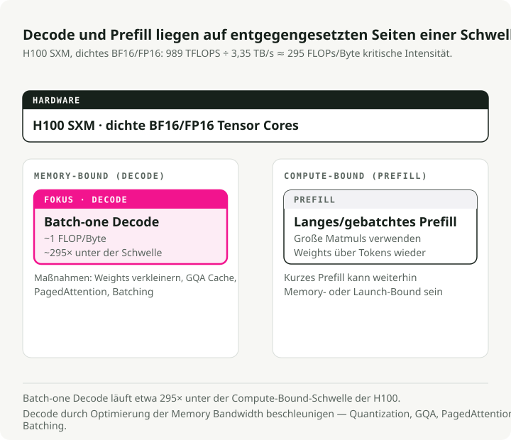
Die zwei Phasen der LLM-Inferenz liegen auf entgegengesetzten Seiten dieses Schwellenwerts:
- Decode ist memory-bound. Token einzeln zu generieren bedeutet, die gesamte mehrere Gigabyte große Gewichtsmatrix aus dem Speicher zu laden, um sie mit genau einem neuen Token zu multiplizieren. Bei 16-Bit-Präzision (2 Bytes pro Parameter) sind das exakt 1 FLOP/Byte, also fast 300x unter dem H100-Schwellenwert. Die Recheneinheiten sitzen mehr als 99 % der Zeit untätig da und warten auf Speicher.
- Prefill ist compute-bound. Beim Verarbeiten des Eingabeprompts werden die Gewichte einmal geladen, aber gleichzeitig mit Hunderten oder Tausenden Tokens multipliziert. Die Intensität steigt weit über 295 und sättigt die Recheneinheiten.
Um Decode zu beschleunigen, optimieren Sie also die Speicherbandbreite: Verkleinern Sie die Gewichte mit Quantisierung, reduzieren Sie den KV-Speicher-Overhead mit GQA und PagedAttention, und erhöhen Sie die Intensität mit Batching. Um Prefill zu beschleunigen, optimieren Sie die Rohrechenleistung: schnellere GPUs, FP8-Compute.
2. GPU-Speicherhierarchie
Eine GPU hat vier Speicherebenen, die wie eine Pyramide angeordnet sind: unten ein großer, aber langsamer Hauptspeicher (HBM), oben winzige, aber sehr schnelle Register. Das Verschieben von Daten in dieser Pyramide nach oben und unten ist der zentrale Engpass. Der härteste Flaschenhals sitzt zwischen HBM und SRAM, wobei SRAM ungefähr 10x schneller ist.
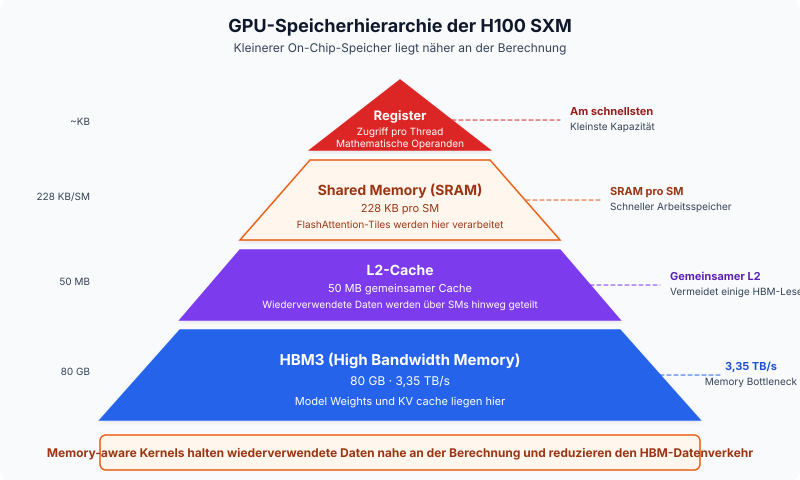
Von schnell nach langsam auf einer H100:
- Register — der schnellste Speicher, direkt an die Verarbeitungsthreads angebunden. Hier läuft die Mathematik tatsächlich; Daten müssen hierhin geladen werden, damit die Tensor Cores sie verwenden können.
- SRAM (Shared Memory) — der Arbeitsspeicher mit ungefähr 33 TB/s.
- L2 Cache — eine mittlere Ebene (50 MB) mit rund 12 TB/s. Sie wirkt als Puffer, sodass nicht alle SMs die gleichen Gewichte aus HBM laden müssen.
- HBM3 — der 80-GB-Hauptspeicher für Modellgewichte und KV-Cache mit ~3.35 TB/s.
Die meisten Softwaretricks in diesem Guide (FlashAttention, Kernel Fusion, PagedAttention) existieren, um Daten möglichst lange im SRAM zu halten und den 10x langsameren Rückweg zu HBM zu vermeiden.
3. GPU-Hardware-Glossar
Die folgenden Begriffe tauchen im Rest des Guides immer wieder auf.
HBM (High Bandwidth Memory) — Gestapelte DRAM-Dies, verbunden über Through-Silicon Vias (TSVs), im Package neben dem GPU-Die montiert. Generationen: HBM2e (A100, 2 TB/s), HBM3 (H100, 3.35 TB/s), HBM3e (H200/B200, 4.8–8 TB/s). Warum das für LLMs wichtig ist: Decode ist durch Speicherbandbreite limitiert, daher bestimmt HBM-Bandbreite direkt TPOT.
GDDR (Graphics DDR) — Klassischer Grafikspeicher (GDDR6, GDDR6X) in Consumer-GPUs (RTX 4090, L40S). Geringere Bandbreite als HBM, aber günstiger pro GB. GDDR6X auf RTX 4090 liefert ~1 TB/s gegenüber 3.35 TB/s HBM3 bei der H100.
SM (Streaming Multiprocessor) — Der grundlegende Compute-Baustein von NVIDIA-GPUs. Jeder SM enthält CUDA Cores, Tensor Cores, Shared Memory (SRAM) und einen Warp-Scheduler. H100 has 132 SMs; A100 hat 108.
Tensor Cores — Spezialisierte Matrix-Multiply-Accumulate-Einheiten in jedem SM. Sie beschleunigen Mixed-Precision-Matmuls (FP16, BF16, FP8, INT8), die Transformer-Compute dominieren. Tensor Cores der H100 liefern 989 TFLOPS in TF32 gegenüber ~67 TFLOPS allein aus CUDA Cores.
CUDA Cores — Allgemeine Floating-Point- und Integer-Einheiten. Sie verarbeiten elementweise Operationen, Aktivierungsfunktionen und Arbeit außerhalb von Matmuls. Tensor Cores übernehmen die Schwerstarbeit für LLMs; CUDA Cores alles andere.
Warp — Eine Gruppe von 32 Threads, die synchron auf einem SM ausgeführt werden. Die kleinste Scheduling-Einheit auf NVIDIA-GPUs. Warp specialization weist verschiedenen Warps unterschiedliche Aufgaben zu (Datenladen vs. Compute), um Pipelining zu ermöglichen.
NVLink — High-Speed-GPU-zu-GPU-Interconnect innerhalb eines Nodes. NVLink 4.0 (H100) liefert 900 GB/s bidirektional; NVLink 5.0 (B200) erreicht 1.8 TB/s. Essenziell für Tensor Parallelism, bei dem GPUs in jeder Schicht Aktivierungen austauschen müssen.
InfiniBand — High-Speed-Netzwerkfabric für GPU-Kommunikation zwischen Nodes. NVIDIA ConnectX-7 liefert 400 Gb/s pro Port. Verwendet für Pipeline Parallelism und verteiltes Training über mehrere Nodes.
RDMA (Remote Direct Memory Access) — Erlaubt einer GPU, den Speicher einer anderen Maschine zu lesen oder zu schreiben, ohne die CPU einzubeziehen, und minimiert so die Latenz. GPUDirect RDMA ermöglicht direkte GPU-zu-GPU-Transfers über Nodes hinweg. Wird im disaggregierten Serving für KV-Cache-Transfers eingesetzt.
NVMe (Non-Volatile Memory Express) — High-Speed-SSD-Interface für KV-Cache-Offloading und ZeRO-Infinity-Parameter-Offloading, wenn GPU-/CPU-Speicher nicht ausreichen. Sequentielle Leseraten von 5–7 GB/s pro Laufwerk (PCIe Gen 4), neuere Gen-5-Laufwerke erreichen 10–14 GB/s.
TFLOPS / PFLOPS — Tera-/Peta-Floating-Point-Operationen pro Sekunde. 1 TFLOPS = 10¹² FLOPS. Die Standardmetrik für GPU-Compute-Throughput. H100 liefert 989 TFLOPS (TF32); FlashAttention-3 erreicht ~1.2 PFLOPS in FP8.
Teil II — Inferenz-Grundlagen
Inferenz ist der Teil des Systems, den Nutzer tatsächlich spüren. Latenz, der KV-Cache, das zweiphasige Ausführungsmodell, Attention und Quantisierung bestimmen zusammen, wie schnell, günstig und zuverlässig Sie ausliefern können.
4. Latenz: TTFT, TPOT und Perzentile
Time to First Token (TTFT) ist die Verzögerung von der Anfrageeinreichung bis zum ersten Ausgabetoken. Sie wird von der Prefill-Phase bestimmt: Das Modell muss den gesamten Prompt verarbeiten, bevor es etwas generiert, daher bedeuten längere Prompts eine höhere TTFT. Produktionsziele liegen zwischen <100 ms für Code Completion und <500 ms für Chatbots. MLPerf Inference v5.0 setzt P99 TTFT auf \(\\leq\) 450 ms für Llama 2 70B.
Time Per Output Token (TPOT) ist das durchschnittliche Intervall zwischen aufeinanderfolgenden Tokens nach dem ersten. Es bildet die Decode-Phase ab, bei der jeder Schritt speicherbandbreitenlimitiert ist:
Die durchschnittliche stille Lesegeschwindigkeit beim Menschen liegt bei ungefähr 250 ms pro Wort (~5 Tokens/s) (Brysbaert, 2019), aber Systeme zielen auf deutlich höhere Raten, damit Nutzer nie auf erscheinenden Text warten müssen. Die Schwelle für flüssig wirkendes Streaming liegt bei ungefähr 25 ms pro Token (~40 Tokens/s). MLPerf setzt P99 TPOT für interaktive Workloads auf \(\\leq\) 40 ms.
P50 vs. P99-Latenz ist wichtig, weil der Median die Worst-Case-Erfahrung verschleiert. P99 ist das langsamste 1 % der Requests – genau dort sitzen Nutzerbeschwerden und SLA-Verstöße. Ein System mit gutem P50 und schlechtem P99 hat ein Problem mit Batching, Preemption oder Queue-Tiefe.
5. Throughput: Tokens pro Sekunde und der Latenz-Trade-off
Throughput wird als Output-Tokens pro Sekunde über alle gleichzeitigen Requests gemessen. Requests pro Sekunde ist eine schwächere Metrik, weil eine 10-Token-Antwort und eine 1.000-Token-Antwort sehr unterschiedliche Kosten haben. Typische Zahlen: Llama 3.1 8B auf einer einzelnen H100 erreicht 5.000–11.000 Output-Tokens/s bei großen Batch-Größen (vLLM Benchmarks, 2024); Llama 3 70B FP8 auf 4×H100 liegt in derselben Größenordnung über vLLM, SGLang und TensorRT-LLM.
Der Trade-off: Bei geringer Parallelität bekommt jeder Request sehr gute Latenz, aber die GPU ist unterausgelastet. Größere Batch-Größen erhöhen den Throughput fast linear, bis Compute sättigt; danach steigt die Latenz stark an. Goodput, also der Anteil der Requests, die Ihre SLO-Ziele einhalten, ist die Metrik, die rohen Throughput mit tatsächlicher Nutzerzufriedenheit verbindet.
6. KV-Cache: Der Flaschenhals hinter den meisten anderen Flaschenhälsen
Während autoregressiver Generierung attendiert jedes neue Token auf alle vorherigen Tokens. Der KV-Cache speichert die Key- und Value-Projektionen jedes Tokens in jeder Schicht, um \(O(n^2)\)-Neuberechnung zu vermeiden. Ohne ihn müsste zur Generierung von Token \(n\) das Modell erneut über alle \(n-1\) vorherigen Tokens laufen.
Der KV-Cache ist meist der dominante Speicherdruck, weil er linear mit Sequenzlänge, Batch-Größe und Anzahl der Schichten wächst:
wobei:
- \(L\) = Anzahl der Schichten
- \(h_{kv}\) = Anzahl der KV-Heads
- \(d_h\) = Head-Dimension
- \(s\) = Sequenzlänge
- \(B\) = Batch-Größe
Konkrete Beispiele mit FP16 und Batch-Größe 1: Llama 3 8B bei 8.192 Tokens verwendet ~1.0 GB KV-Cache; bei 128K Tokens 16 GB. Llama 3 70B bei 128K Tokens benötigt ~40 GB für eine einzelne Sequenz, also die Hälfte des VRAM einer H100. Bei produktiven Batch-Größen übersteigt der KV-Cache die Modellgewichte im Speicher leicht. Naive Implementierungen verschwenden 60–80 % des zugewiesenen KV-Speichers durch Fragmentierung – genau dieses Problem löst PagedAttention.
Die wichtigsten Optimierungen sind GQA (weniger KV-Heads), KV-Cache-Quantisierung (FP8/INT8), PagedAttention (blockbasierte Allokation mit <4 % Verschwendung) und Offloading des KV-Caches auf CPU oder NVMe.
7. Prefill vs. Decode: Zwei Phasen, zwei Flaschenhälse
Die Prefill-Phase verarbeitet den gesamten Eingabeprompt parallel und füllt den KV-Cache. Sie ist compute-bound: Große Matrixmultiplikationen sättigen die Tensor Cores vollständig, und das bestimmt TTFT. Die Decode-Phase generiert jeweils ein Token, wobei jeder Schritt die vollständigen Modellgewichte und den KV-Cache aus HBM liest, um ein einzelnes Token zu erzeugen. Sie ist memory-bandwidth-bound: Die Recheneinheiten warten größtenteils auf Daten, und das bestimmt TPOT.
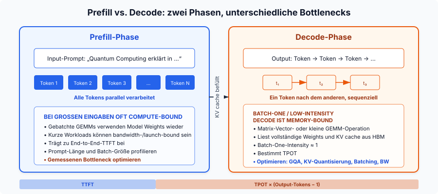
Chunked prefill teilt den Prompt in Blöcke fester Größe (zum Beispiel 512 Tokens), statt ihn komplett auf einmal zu verarbeiten. Ein langes Prefill blockiert dann keine laufenden Decode-Requests mehr, compute-bound und memory-bound Arbeit werden auf derselben GPU gemeinsam geplant, und vLLM-Benchmarks zeigen +50 % Throughput (Agrawal et al., 2024). Die Kosten sind eine leicht höhere TTFT für den neuen Request.
Ein neueres Muster namens disaggregated serving (eingeführt von Splitwise und DistServe, inzwischen von Perplexity und NVIDIA Dynamo genutzt) trennt Prefill und Decode physisch auf unterschiedliche GPU-Pools, jeweils optimiert für ihren Flaschenhals. KV-Cache-Transfers zwischen den Pools laufen über RDMA.
8. GQA und MQA: Den KV-Cache verkleinern
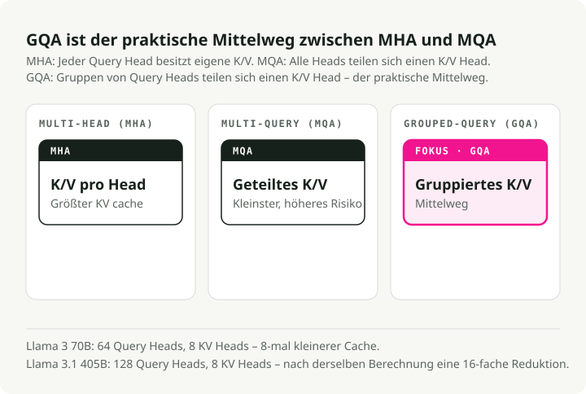
Standard-Multi-Head Attention (MHA) gibt jedem Query-Head seinen eigenen K- und V-Head. Multi-Query Attention (MQA) teilt einen einzigen KV-Head über alle Query-Heads – eine extreme Reduktion. Grouped-Query Attention (GQA) ist der praktische Mittelweg: Gruppen von Query-Heads teilen sich einen KV-Head.
Llama 3 70B verwendet 64 Query-Heads, aber nur 8 KV-Heads – eine 8x-Reduktion des KV-Caches gegenüber MHA. Llama 3.1 405B treibt das auf 128 Query-Heads mit 8 KV-Heads, also 16x Reduktion (Meta, 2024). GQA hält MHA-Qualität (innerhalb von ~1 % auf Benchmarks), nähert sich aber MQA-Geschwindigkeit an (Ainslie et al., 2023). Ein kleinerer KV-Cache bedeutet größere Batches, höheren Throughput und niedrigere Decode-Latenz pro Token.
9. Quantisierung: Bits gegen Geschwindigkeit und Speicher tauschen
Quantisierung reduziert die Präzision von Modellgewichten und/oder Aktivierungen. Die zentralen Trade-offs:
| Format | Bits | Speicher (7B-Modell) | Qualitätsauswirkung |
|---|---|---|---|
| FP16/BF16 | 16 | ~14 GB | Baseline |
| FP8 | 8 | ~7 GB | Auf Hopper (H100) praktisch verlustfrei |
| INT8 | 8 | ~7 GB | 1–3 % Degradation mit Tuning |
| INT4 | 4 | ~3.5 GB | Stabil für 70B+, riskant für kleine Modelle |
AWQ (Activation-Aware Weight Quantization) findet die <1 % salienten Gewichte, indem es Aktivierungsmagnituden betrachtet, und verwendet per-Channel-Skalierung zu ihrem Schutz. Es benötigt nur 128–1.024 Kalibrierungstokens und gewann den MLSys 2024 Best Paper Award. GPTQ nutzt Informationen zweiter Ordnung aus der Hessian-Matrix für schichtweise Quantisierung; das ist auf Coding-Benchmarks besser, braucht aber mehr Kalibrierungsdaten. bitsandbytes (Tim Dettmers’ Bibliothek) quantisiert on the fly beim Modellladen ohne Vorverarbeitungskosten; sein NF4-Format treibt QLoRA-Fine-Tuning an. FP8 auf H100/H200 wird zum Produktionsdefault: nahezu verlustfrei bei 2x Speicherreduktion.
Ein Punkt ist wichtig: Der Kernel zählt oft mehr als der Quantisierungsalgorithmus. Dieselben quantisierten Gewichte können über unterschiedliche Kernel eine 2.6x Throughput-Differenz zeigen – allein wegen unterschiedlicher GPU-Ausnutzung (Section 10).
Teil III — Inferenz-Optimierungen
Dieser Teil behandelt die Softwaretechniken, die aus einem funktionierenden Inferenzsystem ein schnelles machen. Jede zielt auf einen bestimmten Flaschenhals: FlashAttention nutzt die SRAM-HBM-Lücke aus, PagedAttention beseitigt KV-Cache-Fragmentierung, Continuous Batching hält die GPU ausgelastet.
10. CUDA-Kernels und Kernel Fusion
Ein CUDA kernel ist eine für die GPU geschriebene Funktion, die parallel über Tausende Threads läuft. Wenn die CPU einen Kernel aufruft, verteilt die GPU die Arbeit über ihre SMs: Jeder SM führt mehrere Warps mit je 32 Threads aus, und jeder Thread verarbeitet einen Teil der Daten. Jede Operation in der LLM-Inferenz, von Matrixmultiplikation bis Token-Sampling, ist letztlich ein Kernel-Launch. Ein einzelner Forward-Pass durch ein 70B-Modell löst Hunderte bis Tausende Kernel-Launches aus, und der Unterschied zwischen einem naiven und einem optimierten Kernel kann entscheiden, ob Ihr System seine Latenz-SLO erreicht.
Die wichtigsten Kernel-Kategorien im LLM-Serving:
- GEMM-Kernels für Matrixmultiplikation, die sowohl Prefill- als auch Decode-Compute dominieren.
- Attention-Kernels wie FlashAttention, die Berechnungen so kacheln, dass sie in SRAM bleiben statt in HBM auszulaufen.
- Fused kernels, die mehrere Operationen (zum Beispiel add + layer norm oder QKV-Projektion) in einem einzigen Launch zusammenfassen, um die Zwischen-Round-Trips zu HBM zu vermeiden.
- Sampling kernels, die Logits per Top-k-, Top-p- oder Temperature-Sampling in Token-IDs umwandeln.
Kernel-Qualität zählt oft mehr als der Quantisierungsalgorithmus. Dieselben INT4-quantisierten Gewichte erreichen über Marlin (einen optimierten FP16xINT4-Kernel) 712 Tokens/s gegenüber 276 Tokens/s mit vanilla GPTQ – eine 2.6x Throughput-Differenz allein durch bessere GPU-Ausnutzung. Marlin erreicht das durch asynchrones Memory Fetching und Shared-Memory-Queues, die Tensor Cores kontinuierlich mit Arbeit versorgen, statt sie auf HBM warten zu lassen. Triton senkt die Hürde für eigene Kernel, indem es GPU-Programmierung über Python statt rohem CUDA C++ zugänglich macht. Das macht Kernel-Optimierung für ML-Ingenieure statt nur für GPU-Spezialisten praktikabel. Die meisten späteren Optimierungen in diesem Teil (FlashAttention, Fused Kernels, PagedAttention) sind im Kern entweder bessere Kernel oder klügere Orchestrierung von Kernel-Launches.
Kernel Fusion kombiniert mehrere sequentielle Operationen in einem einzigen GPU-Kernel und spart die Zwischenwrites nach HBM. Häufige Fusionen: QKV-Projektion (ein Matmul statt drei), attention + softmax (FlashAttention selbst), add + RMSNorm (FlashNorm) und SwiGLU-Aktivierung (DeepFusionKernel). Triton macht es praktisch, solche fused kernels in Python zu schreiben. Ohne Fusion hat ein 70B-Modell Tausende Kernel-Launches pro Token bei ~30 % GPU-Auslastung. Mit Fusion schrumpfen Schichten auf 1–2 optimierte Kernel bei 80–90 % Auslastung.
11. FlashAttention: Attention so kacheln, dass sie im SRAM bleibt
Standard-Attention materialisiert die vollständige \(N \\times N\)-Attention-Matrix in HBM, was \(O(N^2)\) Speicher kostet und viel Speicherverkehr erzeugt. Die Idee hinter FlashAttention ist, diese Matrix überhaupt nie zu materialisieren. Es kachelt die Q-, K-, V-Matrizen in Blöcke, die in SRAM passen, berechnet partielle Attention innerhalb jeder Kachel und führt die Ergebnisse mit einem online softmax zusammen (laufendes Tracking von Maximum und Summe über Blöcke hinweg). Der Speicher sinkt von \(O(N^2)\) auf \(O(N)\), und die HBM-Lesevorgänge sinken um eine Größenordnung.
Jede Version adressiert den Flaschenhals ihrer GPU-Generation:
- FlashAttention v1 (A100, 2022) zeigte, dass die Kombination aus Kachelung und online softmax funktioniert. 2–4x Speedup gegenüber Standard-Attention, aber nur 25–40 % GPU-Auslastung, weil das Kernel-Scheduling viele SMs ungenutzt ließ.
- FlashAttention v2 (A100, 2023) überarbeitete den Parallelismus, indem entlang der Sequenzdimension statt über Batch und Heads aufgeteilt wurde. Es erreichte 50–73 % Auslastung auf A100, ungefähr 2x schneller als v1.
- FlashAttention v3 (H100 Hopper, 2024) fügte Warp-Spezialisierung hinzu (separate Warps für Datenbewegung vs. Mathe) und GEMM-softmax-Pipelining, um Memory Loads mit Compute zu überlappen. 75–85 % Auslastung auf H100 und bis zu ~1.2 PFLOPS in FP8. NeurIPS 2024 Spotlight.
- FlashAttention v4 (B200 Blackwell, 2026) adressiert einen neuen Flaschenhals: Auf Blackwell skaliert Tensor-Core-Throughput so schnell, dass Nicht-Matmul-Operationen (softmax exponentials, rescaling) limitieren. FA4 emuliert die Exponentialfunktion softwareseitig mit Polynomapproximationen auf FMA-Einheiten, nutzt conditional rescaling zur Overhead-Reduktion und speichert Intermediate in Blackwells dediziertem Tensor Memory (TMEM) statt in Registern. Das Ergebnis: 1,605 TFLOPS/s auf B200 in BF16, 1.3x schneller als cuDNN 9.13 und 2.7x schneller als Triton.
Jede Generation stieß auf eine andere Hardware-Grenze, und jede FlashAttention-Version wurde vom Kernel her neu entworfen, um genau diese Grenze zu adressieren.
12. FlashDecoding: Den Decode-Flaschenhals parallelisieren
Standard-FlashAttention hält die GPU beschäftigt, indem die Arbeit über Batch-Größe und Query-Länge aufgeteilt wird. Während Decode generiert das Modell genau 1 Token auf einmal (Query-Länge = 1). Wenn Batch-Größe mal Anzahl der Attention-Heads kleiner ist als die Gesamtzahl der SMs der GPU (108 auf einer A100), sitzt der Großteil der GPU untätig da, während wenige Einheiten die Token-Historie sequentiell abarbeiten.
FlashDecoding löst das, indem eine neue Parallelisierungsdimension eingeführt wird: die KV-Sequenzlänge selbst. Der KV-Cache wird in kleinere Blöcke zerlegt und über alle sonst ungenutzten GPU-Prozessoren verteilt parallel ausgewertet, anschließend werden die partiellen Ergebnisse per log-sum-exp-Reduktion zusammengeführt.
Das Ergebnis ist ein bis zu 8x schnelleres End-to-End-Decode auf langen Sequenzen (64K Kontext) und nahezu konstante Decode-Zeit pro Token. Das Generieren von Token 60.000 bleibt fast so schnell wie das von Token 100.
13. Continuous Batching vs. Static Batching
Static batching wartet, bis jede Sequenz in einem Batch fertig ist, bevor der nächste gestartet wird. Kurze Sequenzen verschwenden daher GPU-Zyklen, nachdem sie End-of-Sequence erreicht haben. Continuous batching (eingeführt vom Orca paper, OSDI 2022) arbeitet auf Iterationsebene: Bei jedem Decode-Schritt werden fertige Sequenzen entfernt und neue eingefügt.
Die Zahlen sind groß. Anyscales Benchmarks auf OPT-13B zeigen optimiertes Static Batching mit 4x gegenüber naiv, Continuous Batching mit 8x und vLLM mit Continuous Batching + PagedAttention bei 23x gegenüber naiv (Anyscale, 2023). Der Haken: Continuous Batching verstärkt KV-Cache-Fragmentierung. Mehr gleichzeitige Sequenzen bedeuten stärker verteilte Speicherallokationen – genau das Problem, das PagedAttention lösen soll.
14. PagedAttention: Virtueller Speicher für den KV-Cache
vLLMs PagedAttention überträgt die Idee des virtuellen Speichers aus Betriebssystemen auf KV-Cache-Management. Der KV-Cache wird in Blöcke fester Größe geteilt (typischerweise 16 Tokens), Blöcke werden on demand beim Generieren allokiert, und logische (sequentielle) Positionen werden über Blocktabellen auf physische (verstreute) Speicherorte abgebildet. Mehrere Requests mit gemeinsamem Präfix (Systemprompts, Beam Search) können auf dieselben physischen Blöcke zeigen.
Frühere Systeme verschwendeten 60–80 % des KV-Cache-Speichers durch Fragmentierung und Voraballokation. PagedAttention senkt das auf <4 %, wodurch der Throughput bei gleicher Latenz 2–4x steigt und gegenüber HuggingFace Transformers bis zu 24x erreicht (vLLM Blog, 2023).
15. Spekulatives Decoding: Mehrere Tokens pro Forward-Pass
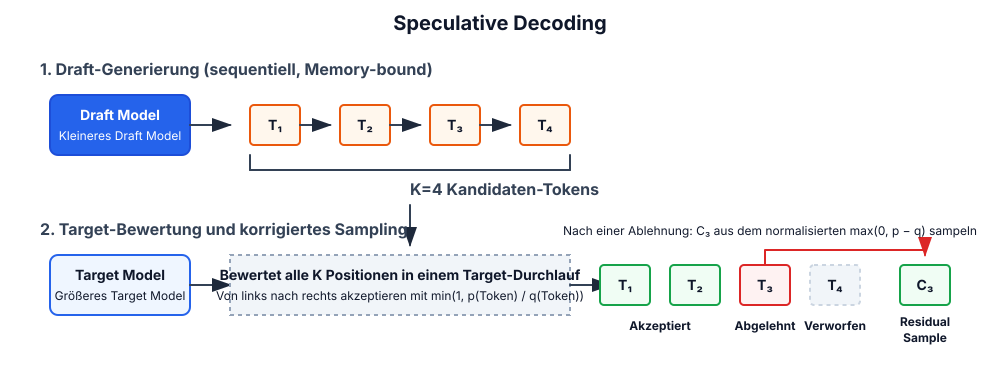
Ein kleines Draft-Modell generiert \(K\) Kandidatentokens, dann verifiziert das große Target-Modell alle \(K\) Tokens in einem einzigen Forward-Pass. Korrekte Tokens werden akzeptiert; das erste falsche wird verworfen. Die Ausgabequalität ist mathematisch identisch zum alleinigen Target-Modell, also ist das ein verlustfreier Speedup.
Das funktioniert, weil LLM-Decode speicherbandbreitenlimitiert ist: Die Verifikation von \(K\) Tokens kostet ungefähr so viel wie die Generierung von 1, weil in beiden Fällen alle Modellgewichte einmal geladen werden. Typische Speedups liegen zwischen 1.5x und 3x, mit Methoden wie EAGLE-3 bis zu 6.5x. Varianten sind Medusa (zusätzliche Prediction-Heads, kein separates Modell), prompt lookup decoding (n-Gram-Abgleich mit der Eingabe, kostenlos) und EAGLE (Feature-Level-Extrapolation).
Der Haken ist Parallelität: Bei großen Batch-Größen kann die zusätzliche Draft- und Verifikations-Compute zu einer 1.4–1.8x Verlangsamung führen. Spekulatives Decoding hilft am meisten bei kleinen Batch-Größen und Aufgaben mit hoher Draft-Akzeptanz (Zusammenfassung, QA).
16. Prefix Caching und KV-Cache-Wiederverwendung
Statt den KV-Cache zu verwerfen, wenn ein Request endet, behält prefix caching ihn zur Wiederverwendung für neue Requests mit demselben Präfix. Das reduziert redundantes Prefill für Systemprompts, Few-Shot-Beispiele, RAG-Kontext und Multi-Turn-Konversationshistorie.
vLLMs Automatic Prefix Caching hasht jeden KV-Block und verwendet eine globale Hashtabelle für Lookups; auf gut strukturierten Prompts werden Cache-Hit-Raten von 87 %+ erreicht. SGLangs RadixAttention verwaltet einen Radix-Baum aller gecachten KV-Tensoren mit Token-Granularität und automatischer Erkennung von Caching-Möglichkeiten und erreicht bis zu 5x Throughput-Verbesserung.
17. Streaming in der Praxis
Streaming sendet Tokens an den Client, sobald sie generiert werden, statt auf die vollständige Antwort zu warten. Die meisten Serving-Frameworks stellen das über Server-Sent Events bereit: Der Client öffnet eine langlebige HTTP-Verbindung, und der Server pusht jedes Token (oder einen kleinen Token-Batch) als data:-Event. TTFT bestimmt, wann der Nutzer die erste Ausgabe sieht; TPOT bestimmt, wie flüssig sie wirkt. Ziel: TPOT < 25 ms für flüssiges Streaming (~40 Tokens/s).
Auf der Client-Seite erzwingt Streaming Buffering-Entscheidungen. Rendering Token für Token kann visuelles Jitter verursachen, besonders bei Markdown oder Codeblöcken, die Kontext über mehrere Tokens zur korrekten Formatierung brauchen. Gängige Muster sind Wort-Level-Buffering (Tokens bis zu einer Leerraumgrenze sammeln), Zeilen-Level-Buffering (auf einen Zeilenumbruch warten) und adaptives Buffering (für Prosa sofort rendern, für Codeblöcke puffern). Der Parameter stream_options: {"include_usage": true} in OpenAI-kompatiblen APIs liefert Token-Zählungen im finalen SSE-Event, was genaue Kostenerfassung für gestreamte Antworten ermöglicht.
Chunked prefill ist der Grund, warum Streaming unter Last stabil bleibt. Ohne diese Technik kann ein einzelnes langes Prefill die Token-Auslieferung für alle anderen gleichzeitigen Nutzer blockieren.
Teil IV — Modellarchitektur
Wie LLMs aufgebaut sind: der Transformer-Block, Tokenisierung, Kontextverarbeitung und die Architekturvarianten, die sich durchgesetzt haben. Diese Konzepte tragen sowohl Inferenz als auch Training.
18. Essentials der Transformer-Architektur
Ein moderner decoder-only Transformer (GPT, Llama) ist ein Stapel identischer Schichten, jede mit zwei Sub-Blöcken: Attention und Feed-Forward. Jeder Sub-Block ist von einer Residualverbindung und Normalisierung umgeben. Die Schlüsselkomponenten:
Multi-Head Attention — der Mechanismus, der jedem Token erlaubt, auf jedes andere Token zu schauen, um Relevantes zu bestimmen. Die Eingabe wird in drei Matrizen projiziert: Queries (wonach suche ich?), Keys (was enthalte ich?) und Values (welche Information trage ich?). Attention-Scores werden dann berechnet als:
Das Skalarprodukt \(QK^T\) misst die Ähnlichkeit zwischen jedem Tokenpaar. Die Division durch \(\\sqrt{d_k}\) verhindert, dass die Dot-Products zu groß werden (was Softmax in Bereiche mit verschwindenden Gradienten drücken würde). Softmax wandelt Scores in Wahrscheinlichkeiten um, und die Multiplikation mit \(V\) erzeugt eine gewichtete Kombination von Value-Vektoren. Wenn das parallel über mehrere Heads läuft, kann das Modell gleichzeitig auf verschiedene Beziehungen achten (ein Head für Syntax, ein anderer für Koreferenz usw.).
Feed-Forward Network (FFN) — sobald Attention entschieden hat, welche Tokens relevant sind, entscheidet das FFN, was mit dieser Information geschehen soll. Moderne LLMs verwenden SwiGLU statt des ursprünglichen ReLU-FFN mit zwei Matrizen:
SwiGLU nutzt drei Gewichtsmatrizen statt zwei und eine glatte Swish-Aktivierung statt ReLU. Das fügt dem FFN etwa 50 % mehr Parameter hinzu, verbessert die Qualität aber genug, dass jede große Modellfamilie (Llama, Mistral, Qwen, Gemma) es übernommen hat. Das FFN macht typischerweise etwa zwei Drittel der Gesamtparameter eines Modells aus.
Residual Connections — jeder Sub-Block addiert seine Ausgabe zurück auf seine Eingabe: \(\\text{Output} = \\text{Input} + \\text{Sublayer}(\\text{Input})\). Ohne diese Skip-Verbindung verschwinden Gradienten beim Backpropagieren durch 80–128 Schichten. Das Residual erzeugt einen Pfad, über den Information und Gradienten direkt von frühen in späte Schichten fließen.
RMSNorm — hat LayerNorm in praktisch allen modernen LLMs ersetzt. LayerNorm normalisiert durch Re-Centering (Mittelwert subtrahieren) und Re-Scaling (durch Standardabweichung teilen). RMSNorm lässt die Mittelwertsubtraktion weg und skaliert nur, halbiert damit die gelernten Parameter und ist 7–64 % schneller ohne Qualitätsverlust. Pre-norm-Platzierung (Normalisierung vor Attention/FFN statt danach) ist heute Standard, weil sie stabilere Gradienten ohne sorgfältiges Learning-Rate-Warmup liefert.
Abschätzung der Parameteranzahl für ein decoder-only Modell:
wobei \(V\) = Vokabulargröße, \(d\) = Hidden Dimension, \(L\) = Anzahl der Schichten. Der Term \(V \\times d\) ist die Embedding-Matrix; die \(12 \\times d^2\) pro Schicht decken Attention-Projektionen (Q, K, V, Output = \(4d^2\)) und das SwiGLU-FFN (\(8d^2\) mit der typischen Intermediate-Größe \(\\frac{8}{3}d\)) ab. Für Llama 3 8B (\(V\)=128,256, \(d\)=4,096, \(L\)=32): \(128{,}256 \\times 4{,}096 + 12 \\times 32 \\times 4{,}096^2 \\approx 7.0B + 0.5B \\approx 7.5B\) Parameter (tatsächlich: 8.03B mit tied embeddings und GQA-Anpassungen).
19. Warum decoder-only Architekturen dominieren
Der ursprüngliche Transformer (2017) hatte sowohl einen Encoder als auch einen Decoder. Seitdem hat sich das Feld in drei Architekturfamilien aufgespalten – und eine davon wurde zum Default für generative KI.
Encoder-only-Modelle (BERT, RoBERTa) verwenden bidirektionale Attention: Jedes Token attendiert in beide Richtungen auf jedes andere Token. Das erzeugt starke Repräsentationen für Verständnisaufgaben (Klassifikation, NER, semantische Ähnlichkeit), kann aber keinen Text autoregressiv generieren. Encoder-only-Modelle dominieren weiterhin als Backbone für Embedding-Modelle, Reranker und leichte Klassifikatoren (zum Beispiel die BERT-basierten Router in RouteLLM).
Encoder-decoder-Modelle (T5, BART, der ursprüngliche Transformer) trennen Verständnis von Generierung. Der Encoder verarbeitet die volle Eingabe mit bidirektionaler Attention, dann generiert der Decoder die Ausgabe autoregressiv und attendiert über cross-attention auf die Repräsentationen des Encoders. Das hatte einen natürlichen Vorteil für Sequence-to-Sequence-Aufgaben wie Übersetzung, bei denen Ein- und Ausgabe grundlegend unterschiedliche Sequenzen sind. Googles T5 zeigte, dass sich jede NLP-Aufgabe als text-to-text formulieren lässt, und Encoder-decoder-Modelle treiben weiterhin einige spezialisierte Systeme an (Whisper für Spracherkennung, FLAN-T5 für Instruction Following).
Decoder-only-Modelle (GPT, Llama, Mistral, Gemini) verwenden kausale (unidirektionale) Attention: Jedes Token attendiert nur auf vorherige Tokens. Sie formulieren alles als Next-Token-Prediction: Die „Eingabe“ ist der Beginn der Sequenz, die „Ausgabe“ ihre Fortsetzung. Vier Gründe, warum sich diese Architektur durchgesetzt hat:
-
KV-Cache-Effizienz. Der KV-Cache vorheriger Tokens bleibt beim Generieren neuer Tokens gültig, daher muss er nie verworfen oder neu berechnet werden. Encoder-decoder-Modelle müssen zwei getrennte Attention-Caches verwalten (Self-Attention plus Cross-Attention über die Encoder-Ausgabe), was Speicher-Overhead und architektonische Komplexität erhöht.
-
Einfacheres Training. Das Trainingsziel ist schlicht Next-Token-Prediction auf Rohtext. Keine gepaarten Input-Output-Daten (wie bei Übersetzungsmodellen) oder Rekonstruktion maskierter Tokens (wie bei BERT). Man kann auf praktisch jedem Text aus dem Internet, aus Büchern und Code trainieren, ohne spezielle Vorverarbeitung – ein großer Vorteil bei Skalierung auf Billionen Tokens.
-
Einfachere Architektur. Ein Modul erledigt alles: derselbe Transformer-Block, \(L\)-mal wiederholt. Keine Encoder-Decoder-Cross-Attention-Schichten, kein separater Encoder-Stack. Das macht Parallelisierungsstrategien einfacher (Section 33) und verkleinert die Engineering-Oberfläche für Optimierung. FlashAttention, Quantisierung und spekulatives Decoding müssen nur ein Attention-Muster adressieren.
-
In-Context Learning. Decoder-only-Modelle sind von Natur aus stark in Few-Shot-Learning, weil Beispiele, Instruktionen und die Anfrage einfach allesamt Tokens in derselben Sequenz sind. Das Modell unterscheidet nicht zwischen „Input“ und „Output“; es sagt das nächste Token auf Basis des bisherigen Kontexts voraus. GPT-3 demonstrierte das erstmals im großen Maßstab und machte decoder-only-Modelle zur starken Wahl für allgemeine Assistenten.
20. Mixture of Experts
MoE ersetzt das dichte FFN in jeder Transformer-Schicht durch mehrere kleinere Expert-FFNs plus einen leichten Gating Router. Der Router berechnet für jeden Experten einen Score (typischerweise ein Softmax über gelernte lineare Projektionen) und wählt pro Token die Top-\(k\)-Experten aus. Nur die aktivierten Experten rechnen, sodass ein Modell enorme Gesamtkapazität haben kann, während die Kosten pro Token niedrig bleiben. Das ist sparse conditional computation: Gesamtparameter bestimmen, was das Modell repräsentieren kann, aktive Parameter bestimmen, was es kostet, es auszuführen.
| Modell | Gesamtparameter | Aktive Parameter | Experten (geroutet + shared) | Top-\(k\) |
|---|---|---|---|---|
| Mixtral 8x7B | 47B | ~13B | 8 + 0 | 2 |
| DeepSeek-V3 | 671B | 37B | 256 + 1 | 8 |
Der shared expert in DeepSeek-V3 wird für jedes Token immer aktiviert. Er liefert eine Baseline-Repräsentation, auf der die gerouteten Experten spezialisieren können.
MoE-Training bringt eigene Probleme mit. Load balancing: Tokens konzentrieren sich auf einige populäre Experten, der Rest wird untertrainiert. Expert collapse: Experten konvergieren auf identische Repräsentationen, wodurch der Nutzen mehrerer Experten verloren geht. Dazu kommt Kommunikations-Overhead für Expert Parallelism. Traditionelle MoE-Modelle ergänzen einen Auxiliary Loss, um unausgeglichenes Routing zu bestrafen, aber dieser Loss konkurriert mit dem eigentlichen Trainingsziel und verschlechtert die Qualität. DeepSeek-V3 löst das mit auxiliary-loss-free Bias-Terms: Jeder Experte erhält einen Bias zu seinem Gating-Score, der außerhalb der Backpropagation dynamisch angepasst wird – gesenkt für überlastete Experten, erhöht für unterausgelastete. Das Ergebnis ist balanciertes Routing ohne Qualitäts-Trade-off.
21. Tokenisierung: BPE, SentencePiece und tiktoken
LLMs sehen keinen Text. Sie sehen Sequenzen aus ganzzahligen Token-IDs. Ein Tokenizer zerlegt Rohtext in Tokens (Subword-Stücke) und mappt jedes auf eine ID. Die Wahl des Tokenizers beeinflusst Modellqualität, Inferenzgeschwindigkeit und mehrsprachige Fairness.
Byte Pair Encoding (BPE) ist der gängige Algorithmus. Er verschmilzt iterativ die häufigsten benachbarten Paare im Trainingskorpus. Ein vereinfachtes Beispiel:
- Start mit Zeichen-Vokabular:
[l, o, w, e, r, _] - Häufigstes Paar ist
(l, o)→ Merge zulo→ Vokabular:[l, o, w, e, r, _, lo] - Nächsthäufigstes Paar ist
(lo, w)→ Merge zulow→ Vokabular ergänzt umlow - Fortsetzen, bis das Vokabular die Zielgröße erreicht (z. B. 128K Tokens)
Häufige Wörter wie "the" werden zu einzelnen Tokens, während seltene Wörter wie "defenestration" in Subword-Stücke wie ["def", "en", "est", "ration"] zerlegt werden. Der Trade-off ist Vokabulargröße gegen Sequenzlänge.
Drei Tokenizer-Implementierungen decken die meisten produktiven Fälle ab:
- SentencePiece behandelt Eingaben als Roh-Byte-Stream ohne sprachspezifische Vorverarbeitung (keine Pre-Tokenisierung anhand von Leerzeichen oder Interpunktion), was es sprachagnostisch macht und für nicht-lateinische Schriften wichtig ist. Unterstützt sowohl BPE als auch Unigram. Verwendet von Llama 1/2, T5 und Mistral.
- tiktoken ist OpenAIs Rust-basierter Tokenizer mit byte-level BPE. Sein kompilierter Rust-Kern ist 3–6x schneller als Python-basierte Alternativen. Llama 3 wechselte von SentencePiece auf den Algorithmus von tiktoken.
- HuggingFace Tokenizers ist die Rust-basierte Bibliothek mit Unterstützung für BPE, WordPiece und Unigram. Sie ist de facto der Standard für Open-Source-Modellverteilung.
Die Vokabulargrößen sind stetig gewachsen, mit großen Folgen für die Effizienz:
| Modell | Vokabulargröße | English Fertility | Warum das wichtig ist |
|---|---|---|---|
| GPT-2 | 50,257 | ~1.3 tokens/word | Ursprüngliche BPE-Baseline |
| Llama 2 | 32,000 | ~1.4 tokens/word | Kleineres Vokabular, längere Sequenzen |
| GPT-4 | 100,256 | ~1.1 tokens/word | Bessere Kompression, weniger Tokens pro Request |
| Llama 3 | 128,256 | ~1.0 tokens/word | 4x größer als Llama 2, großer Mehrsprachigkeitsgewinn |
| GPT-4o | 200,000 | ~1.0 tokens/word | Größtes Produktionsvokabular |
Fertility (Tokens pro Wort) misst die Kompressionseffizienz. Weniger ist besser: weniger Tokens bedeuten kürzere Sequenzen, geringere Kosten und mehr Inhalt im Kontextfenster. Englisch liegt typischerweise bei ~1.0–1.3 tokens/word, aber nicht-lateinische Schriften (Chinesisch, Japanisch, Koreanisch, Arabisch) können mit englischzentrierten Vokabularen 2–4x höher liegen. Derselbe Inhalt kostet für nicht-englische Nutzer 2–4x mehr Tokens – ein dauerhaftes Fairnessproblem, das größere, ausgewogenere Vokabulare nur teilweise entschärfen.
22. Kontextfenster und Positionskodierungen
Das Kontextfenster ist die maximale Anzahl von Tokens, die ein Modell in einem einzelnen Forward-Pass verarbeiten kann. Es ist stark gewachsen:
| Modell | Kontextfenster | Jahr |
|---|---|---|
| Original Transformer | 512 | 2017 |
| GPT-4 Turbo | 128K | 2023 |
| Claude 3.5 | 200K | 2024 |
| Gemini 1.5 Pro | 1M+ | 2024 |
| Grok 4 Fast | 2M | 2025 |
Es gibt hier ein Grundproblem: Der Attention-Mechanismus behandelt seine Eingabe als Menge, nicht als Sequenz. Er hat kein eingebautes Verständnis von Wortreihenfolge. Ohne Positionsinformation würden „the cat sat on the mat“ und „the mat sat on the cat“ identische Repräsentationen erzeugen. Positionskodierungen injizieren Reihenfolge, damit das Modell weiß, wo jedes Token steht.
Drei Ansätze dominieren:
-
RoPE (Rotary Position Embeddings) kodiert die Position jedes Tokens, indem seine Query- und Key-Vektoren um einen zur Position proportionalen Winkel rotiert werden. Nah beieinanderliegende Tokens bekommen ähnliche Rotationen, daher bleibt ihr Dot-Product (Attention-Score) hoch. Weit entfernte Tokens bekommen sehr unterschiedliche Rotationen, wodurch relative Distanz kodiert wird. RoPE ist Standard für fast alle modernen offenen LLMs (Llama, Mistral, Qwen), weil es relative Positionen gut abbildet und rechnerisch günstig ist.
-
ALiBi (Attention with Linear Biases) verzichtet auf Änderungen an Embeddings und fügt Attention-Scores direkt eine Strafe hinzu: Je weiter zwei Tokens auseinanderliegen, desto größer der negative Bias. Keine gelernten Parameter, keine Zusatzberechnung. Es erlaubt eine gewisse Extrapolation über die Trainingslänge hinaus, degradiert aber bei 2x+ Trainingskontext merklich.
-
YaRN (Yet another RoPE extensioN) ist aktuell die beste Option, um das Kontextfenster eines Modells über die trainierte Länge hinaus zu erweitern. Es gruppiert RoPEs Frequenzdimensionen in drei Kategorien (hochfrequent: nicht skalieren; niederfrequent: linear skalieren; mittelfrequent: interpolieren) und wendet auf jede eine andere Skalierung an. Das Ergebnis: Kontexterweiterung mit 10x weniger Fine-Tuning-Tokens und 2.5x weniger Trainingsschritten als naive Positionsinterpolation.
Teil V — Training und Alignment
Im Training entstehen Fähigkeiten. Dieser Teil behandelt Pretraining, effizientes Fine-Tuning (LoRA, Mixed Precision), Skalierungsgesetze und Alignment-Methoden.
23. Pretraining, Fine-Tuning und Alignment
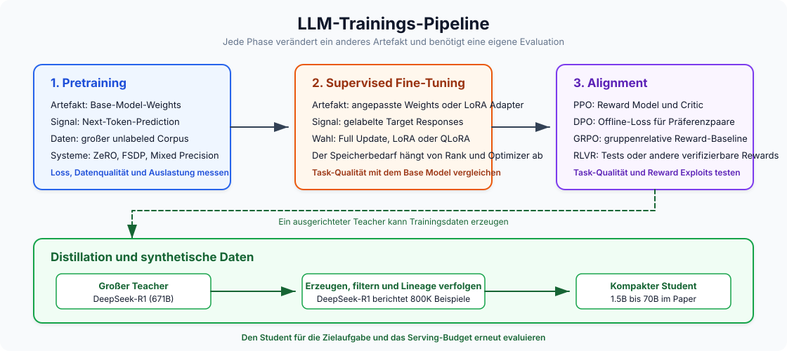
Pretraining ist selbstüberwachtes Next-Token-Prediction auf Billionen Tokens. Es baut allgemeines Sprachverständnis auf und kostet \\(500K to \\\)100M+: Llama 3 405B nutzte \(3.8 \\times 10^{25}\) FLOPs. Supervised fine-tuning (SFT) passt das vortrainierte Modell mit gelabelten Daten an spezifische Aufgaben an, im Bereich von einigen Hundert bis wenigen Tausend Dollar auf einer einzelnen GPU. RLHF / RLAIF vermittelt subjektive Eigenschaften wie Hilfsbereitschaft über Preference Learning: menschliche Vergleiche sammeln, ein Reward-Modell trainieren und dann mit RL (typischerweise PPO oder DPO) fine-tunen. RLAIF ersetzt menschliche Annotatoren durch AI-Feedback (Constitutional AI).
Compute spannt sich über ungefähr six orders of magnitude: Pretraining bei \(10^{24}\)–\(10^{26}\) FLOPs, SFT bei \(10^{18}\)–\(10^{21}\), RLHF ähnlich wie SFT, aber mit 4 Modellkopien im Speicher für PPO. Das vollständige Fine-Tuning-Entscheidungsframework (wann Fine-Tuning vs. RAG vs. Prompt Engineering) habe ich im LLM Fine-Tuning Guide behandelt.
24. LoRA und QLoRA: Parametereffizientes Fine-Tuning
LoRA friert die vortrainierten Gewichte ein und injiziert trainierbare Low-Rank-Matrizen \(A\) (\(r \\times k\)) und \(B\) (\(d \\times r\)), sodass das aktualisierte Gewicht \(W_0 + BA\) ist. Die Einsicht: Gewichtsupdates während Fine-Tuning haben einen niedrigen intrinsischen Rang. Das reduziert trainierbare Parameter um 10.000x (GPT-3 175B fällt von 175B auf ~18M) und GPU-Speicher um ~3x. Typische Ränge: \(r\)=8–16 für einfache Aufgaben, \(r\)=64–128 für komplexe Szenarien. LoRA-Adapter können nach dem Training zusammengeführt werden, ohne Inferenz-Overhead.
QLoRA lädt das Basismodell in 4-Bit-NF4-Quantisierung, während LoRA-Adapter in BF16 trainiert werden. NormalFloat4 platziert mehr Quantisierungsstufen in der Nähe von null, wo die Gewichtsdichte am höchsten ist. QLoRA fine-tuned ein 65B-Modell auf einer einzelnen 48GB-GPU, mit einer Leistung, die von 16-Bit-Full-Fine-Tuning kaum zu unterscheiden ist. Der Trade-off sind 39 % längere Trainingszeit für 33 % GPU-Speichereinsparung gegenüber Standard-LoRA.
25. Mixed-Precision-Training
Jedes Floating-Point-Format verteilt seine Bits auf drei Felder: Vorzeichen (immer 1 Bit), Exponent (legt den Dynamikbereich fest) und Mantisse (legt die Präzision fest). Mehr Exponentenbits bedeuten einen größeren Bereich darstellbarer Größenordnungen; mehr Mantissenbits feinere Unterschiede zwischen nahen Werten. Integer-Formate haben überhaupt keinen Exponenten und repräsentieren nur gleichmäßig verteilte ganze Zahlen in einem festen Bereich.
| Format | Bits | Layout (S / E / M) | Bereich | Präzision | Am besten für |
|---|---|---|---|---|---|
| FP32 | 32 | 1 / 8 / 23 | \(\\pm 3.4 \\times 10^{38}\) | ~7 Dezimalstellen | Master Weights, Optimizer States (Adam Momentum & Variance) |
| BF16 | 16 | 1 / 8 / 7 | \(\\pm 3.4 \\times 10^{38}\) | ~2 Dezimalstellen | Bevorzugtes Trainingsformat — gleicher Bereich wie FP32, kein Loss Scaling nötig |
| FP16 | 16 | 1 / 5 / 10 | \(\\pm 65{,}504\) | ~3 Dezimalstellen | Training mit Loss Scaling (ältere GPUs); Inferenz auf Pre-Hopper-Hardware |
| FP8 E4M3 | 8 | 1 / 4 / 3 | \(\\pm 448\) | ~1 Dezimalstelle | Forward-Pass auf Hopper (H100) — mehr Präzision für Gewichte & Aktivierungen |
| FP8 E5M2 | 8 | 1 / 5 / 2 | \(\\pm 57{,}344\) | ~0.6 Dezimalstellen | Backward-Pass auf Hopper — größerer Bereich für Gradienten |
| INT8 | 8 | fixed-point | \(-128\) to \(127\) | Exakte Integer | Post-Training-Gewichtsquantisierung für Inferenz (W8A8); KV-Cache-Quantisierung |
| INT4 | 4 | fixed-point | \(-8\) to \(7\) | Exakte Integer | Aggressive weight-only Quantisierung (AWQ, GPTQ) für Inferenz auf speicherlimitierten Systemen |
BF16 hat denselben Bereich wie FP32, weil der Bereich durch das Exponentenfeld bestimmt wird, und BF16 alle 8 Exponentenbits von FP32 beibehält. Es opfert stattdessen Mantissenbits (7 statt 23) und tauscht Präzision gegen 2x Speicherreduktion, ohne die Overflow- und Underflow-Probleme, die FP16-Training plagen. FP16 hat nur 5 Exponentenbits und begrenzt seinen Bereich auf ~65K. Gradienten überschreiten das regelmäßig, daher braucht FP16-Training Loss Scaling: den Loss vor Backprop mit einer großen Konstanten multiplizieren und die Gradienten danach wieder dividieren. BF16 macht Loss Scaling überflüssig.
Integer-Formate fehlen im Training, weil Integer-Quantisierung keinen Dynamikbereich hat und die breite Streuung von Gradientenmagnituden während Backpropagation nicht darstellen kann. Für Inferenz funktionieren sie gut, weil Gewichte eingefroren sind und auf einen festen Bereich abgebildet werden können. INT4-Quantisierung (über AWQ oder GPTQ) reduziert ein 7B-Modell von ~14 GB auf ~3.5 GB – genug für Consumer-GPUs bei nur geringem Qualitätsverlust.
FP8-Training auf H100 über Transformer Engine verwendet E4M3 für den Forward-Pass (mehr Mantissenbits, bessere Präzision für Aktivierungen) und E5M2 für den Backward-Pass (mehr Exponentenbits, größerer Bereich für Gradienten) und liefert bis zu 75 % schnellere Wall-Clock-Zeit auf 175B-Modellen. DeepSeek-V3 wurde vollständig mit FP8 Mixed Precision trainiert und kostete etwa $5.6M, was die marginalen Compute-Kosten des finalen Trainingslaufs sind, ohne R&D und Infrastruktur.
26. Gradient Checkpointing
Jede Schicht des Forward-Passes erzeugt eine Zwischenausgabe, eine Aktivierung:
Normalerweise müssen alle Aktivierungen im Speicher bleiben, weil Backpropagation sie zur Gradientenberechnung benötigt. Bei einem tiefen Transformer können die gespeicherten Aktivierungen mehr Speicher als die Modellgewichte selbst verbrauchen.
Gradient Checkpointing tauscht Compute gegen Speicher, indem die meisten dieser Aktivierungen verworfen und während der Backpropagation on the fly neu berechnet werden. Die Standardstrategie (Chen et al., 2016) teilt ein Netzwerk mit \(n\) Schichten in \(\\sqrt{n}\) gleichmäßig verteilte Segmente und speichert nur die Randaktivierung jedes Segments. Diese gespeicherten Grenzen sind die „Checkpoints“. Alle Zwischenaktivierungen innerhalb eines Segments werden sofort verworfen.
Wenn der Backward-Pass eine Schicht innerhalb eines Segments erreicht, werden ihre Aktivierungen vom nächsten Checkpoint aus neu berechnet. Dadurch sinkt der Aktivierungsspeicher von \(O(n)\) auf \(O(\\sqrt{n})\), was in der Praxis eine 60–70 % Reduktion bedeutet – bei Kosten von ungefähr einem zusätzlichen Forward-Pass (~20–33 % mehr Compute). FlashAttention wendet dasselbe Prinzip innerhalb von Attention an, indem die vollständige Attention-Matrix nicht materialisiert wird. In HuggingFace aktivieren Sie das mit gradient_checkpointing=True.
27. DeepSpeed ZeRO Stages
Im Standard-Data-Parallelism hält jede GPU eine vollständige Kopie von Modellgewichten, Gradienten und Optimizer States. Für Adam benötigt jeder Parameter 2 Bytes für das FP16-Gewicht + 4 Bytes für das FP32-Master-Gewicht + 4 Bytes für Momentum + 4 Bytes für Varianz + 2 Bytes für den Gradienten, also 16 Bytes pro Parameter. Ein Modell mit 7.5B Parametern braucht ~120 GB pro GPU, und jede GPU speichert dasselbe. Auf 64 GPUs sind das 64 identische 120-GB-Kopien. Viel Verschwendung.
DeepSpeed ZeRO (Zero Redundancy Optimizer) eliminiert diese Duplizierung, indem diese Komponenten über GPUs geshardet statt repliziert werden:
- Stage 1 — partition optimizer states. Jede GPU speichert nur 1/N der Optimizer States (Adams Momentum und Varianz, 8 Bytes/Parameter). Wenn eine GPU ein Gewicht aktualisieren muss, aktualisiert sie nur ihren Slice und broadcastet das Ergebnis. Der Speicher sinkt von ~120 GB auf ~31 GB pro GPU.
- Stage 2 — auch Gradienten partitionieren. Gradienten (2 Bytes/Parameter) werden nicht mehr per all-reduce an jede GPU verteilt. Jede GPU erhält über reduce-scatter nur den benötigten Gradientenslice. Der Speicher sinkt auf ~16 GB pro GPU.
- Stage 3 — auch die Modellgewichte partitionieren. Jede GPU hält nur 1/N der FP16-Gewichte. Vor dem Forward- oder Backward-Pass jeder Schicht ruft die GPU all-gather auf, um die vollständigen Schichtgewichte temporär aus allen anderen GPUs zu rekonstruieren, rechnet und verwirft die zusammengeführten Gewichte wieder. Der Speicher sinkt auf ~1.9 GB pro GPU.
| Konfiguration | Optimizer States | Gradienten | Gewichte | Speicher pro GPU (7.5B) |
|---|---|---|---|---|
| No ZeRO | Repliziert | Repliziert | Repliziert | ~120 GB |
| Stage 1 | Partitioniert | Repliziert | Repliziert | ~31 GB |
| Stage 2 | Partitioniert | Partitioniert | Repliziert | ~16 GB |
| Stage 3 | Partitioniert | Partitioniert | Partitioniert | ~1.9 GB |
Der Trade-off ist Kommunikation. Stage 1 fügt minimalen Overhead hinzu, Stage 2 ersetzt all-reduce durch reduce-scatter (ähnliche Kosten), aber Stage 3 benötigt all-gather-Aufrufe vor jeder Schicht sowohl im Forward- als auch im Backward-Pass – ungefähr 1.5x Kommunikationsvolumen gegenüber Standard-Data-Parallelism.
ZeRO-Infinity erweitert Stage 3 um Offloading partitionierter States auf CPU-RAM und sogar NVMe-SSDs, wodurch Training von Modellen mit Billionen Parametern auf begrenzten GPU-Clustern möglich wird. Die Kosten sind ein großer Geschwindigkeitseinbruch (NVMe ist ~500x langsamer als HBM), daher ist ZeRO-Infinity das Mittel der Wahl, wenn das Modell wirklich nicht in GPU- plus CPU-Speicher passt.
28. FSDP: PyTorch-natives Sharding
Fully Sharded Data Parallel (FSDP) ist PyTorchs eingebaute Antwort auf DeepSpeed ZeRO-3. Es shardet Parameter, Gradienten und Optimizer States über GPUs mit derselben Grundidee. Die Mechanik pro Schicht ist eine einfache Schleife:
- All-gather der vollständigen Parameter von allen GPUs (temporäre Rekonstruktion der kompletten Schicht).
- Compute des Forward- oder Backward-Passes für diese Schicht.
- Free der zusammengeführten Parameter unmittelbar danach. Jede GPU behält nur ihren eigenen Shard.
- Reduce-scatter der Gradienten, sodass jede GPU nur ihren zugewiesenen Gradientenslice erhält.
Weil FSDP nativ in PyTorch ist, vermeidet es den Overhead der Brücke zwischen Frameworks. Dieser Integrationsvorteil macht FSDP in Multi-Node-Setups für mittelgroße Modelle pro Iteration bis zu 5x schneller als DeepSpeed ZeRO-3 (stark workloadabhängig), und es funktioniert nativ mit PyTorch-Debugging-Tools, Profilern und torch.compile.
| Kriterium | FSDP (PyTorch) | DeepSpeed ZeRO |
|---|---|---|
| Am besten für | Modelle bis ~70B, PyTorch-native Workflows | Sehr große Modelle (70B+), extreme Speicherengpässe |
| Offloading | CPU-Offloading | CPU + NVMe-Offloading (ZeRO-Infinity) |
| ZeRO stages | Nur Stage 3 (vollständiges Sharding) | Stages 1, 2, 3 (granulare Kontrolle) |
| Framework-Integration | Natives PyTorch, torch.compile-Unterstützung | Separate Bibliothek, eigenes Config-System |
| Ökosystem | PyTorch-nativ | Größerer Funktionsumfang, mehr Tuning-Parameter |
FSDP2 (2024–2025) ist ein Rewrite, das die Integration mit torch.compile für bessere Kernel Fusion verbessert, FP8-Training über TorchAO hinzufügt und die API vereinfacht. Sowohl FSDP als auch DeepSpeed sind über HuggingFace Accelerate zugänglich, sodass Sie per einfacher Config-Änderung zwischen beiden wechseln können.
29. Skalierungsgesetze und die Chinchilla-Falle
Chinchilla scaling (DeepMind, 2022) zeigte, dass compute-optimales Training ~20 Tokens pro Parameter verwendet – ein 70B-Modell sollte also auf ~1.4T Tokens trainiert werden. Wenn man Chinchilla exakt folgt, entstehen Modelle, die zu teuer im Serving sind – das ist die Chinchilla trap. Ein Chinchilla-optimales 70B-Modell erzielt hervorragenden Trainingsverlust, aber jeder Inferenz-Request muss alle 70B Parameter laden und ausführen. Wenn ein kleineres Modell, das auf mehr Daten trainiert wurde, ähnliche Qualität erreicht, ist es über Milliarden produktiver Requests hinweg dramatisch günstiger im Serving.
Die Lösung ist, kleinere Modelle auf deutlich mehr Daten überzutrainieren. Die Entwicklung ist auffällig:
| Modell | Parameter | Trainings-Tokens | Tokens/Parameter | Chinchilla × |
|---|---|---|---|---|
| Chinchilla | 70B | 1.4T | 20:1 | 1× |
| Llama 1 | 65B | 1.4T | 22:1 | 1× |
| Llama 2 | 70B | 2.0T | 29:1 | 1.4× |
| Llama 3 8B | 8B | 15T | 1,875:1 | 94× |
| Qwen3-0.6B | 0.6B | 36T | 60,000:1 | 3,000× |
Wenn man die Lebenszeitkosten der Inferenz über Milliarden Requests berücksichtigt, gewinnt kleiner und länger trainieren klar. Ein Modell wie Llama 3 8B kostet im Training mehr Compute, als Chinchilla vorschreiben würde, ist aber beim Deployment nur ein Bruchteil so teuer – und Inferenz dominiert die Gesamtkosten. „Chinchilla-optimal“ bedeutet in Wahrheit „trainingscompute-optimal“ – ein anderes Ziel als „inferenzbewusst optimal“.
30. RLHF, DPO, GRPO und die Alignment-Landschaft
Alignment ist der Prozess, ein vortrainiertes Modell so zu steuern, dass es Instruktionen befolgt, schädliche Anfragen ablehnt und wahrheitsgemäße Antworten gibt. Es schließt die Lücke zwischen „kann das nächste Token vorhersagen“ und „ist tatsächlich nützlich und sicher“. Ein vortrainiertes Basismodell generiert sonst problemlos toxischen Inhalt, halluziniert selbstsicher oder ignoriert Instruktionen. Die folgenden Methoden sind die Hauptansätze, diese Lücke zu schließen – jeweils mit eigenen Trade-offs bei Komplexität, Datenanforderungen und Trainingsstabilität.
Die klassische RLHF-Pipeline: SFT → menschliche Preference-Paare sammeln → Reward-Modell auf diesen Paaren trainieren → Policy mit PPO (Proximal Policy Optimization) fine-tunen. PPO hält 4 Modellkopien gleichzeitig im Speicher (Policy, Referenz, Critic/Value-Modell, Reward-Modell), ist hyperparametersensitiv und anfällig für reward hacking, bei dem das Modell Schwächen des Reward-Modells ausnutzt (zum Beispiel ausschweifende, selbstsicher klingende Antworten), statt die Qualität wirklich zu verbessern.
DPO (Direct Preference Optimization) überspringt Reward-Modell und RL-Loop vollständig und optimiert direkt einen kontrastiven Loss auf Preference-Paaren. Das reduziert die Pipeline auf einen einzelnen überwachten Trainingsschritt, was deutlich einfacher und stabiler ist. Der Trade-off: DPO ist offline. Es trainiert nur auf einem festen Datensatz bereits gesammelter Präferenzen. Das Modell erzeugt während des Trainings keine neuen Antworten und kann daher kein Verhalten außerhalb seiner Ausgangsverteilung erkunden. Das begrenzt seine Wirksamkeit für Aufgaben wie Reasoning, bei denen das Modell neue Strategien entdecken muss.
GRPO (Group Relative Policy Optimization, DeepSeek) kombiniert das Beste aus beiden Welten. Es entfernt PPOs Critic/Value-Modell, indem es mehrere Completions pro Prompt erzeugt und den durchschnittlichen Reward der Gruppe als Baseline nutzt, sodass nur noch 2 LLM-Kopien statt PPOs 4 nötig sind. Im Gegensatz zu DPO ist GRPO on-policy: Das Modell generiert während des Trainings frische Antworten und kann dadurch explorieren. GRPO trug DeepSeek-R1s Reasoning-Durchbruch über RLVR (Reinforcement Learning from Verifiable Rewards), bei dem das gelernte Reward-Modell durch regelbasierte Verifikation ersetzt wird (mathematische Korrektheit, Code-Kompilierung, Unit-Tests). Verifizierbare Rewards lassen sich nicht hacken und umgehen so reward hacking.
| Methode | Modelle im Speicher | Reward-Signal | Online/Offline | Zentrale Einschränkung |
|---|---|---|---|---|
| PPO | 4 (Policy, Ref, Critic, Reward) | Gelerntes Reward-Modell | Online | Reward Hacking, komplexes Tuning |
| DPO | 2 (Policy, Referenz) | Implizit (Preference-Paare) | Offline | Keine Exploration, feste Daten |
| GRPO | 2 (Policy, Referenz) | Explizit (verifizierbar oder gelernt) | Online | Braucht verifizierbare Rewards für vollen Nutzen |
31. Distillation: Wissen zwischen Modellen komprimieren
Knowledge Distillation überträgt Fähigkeiten von einem großen Teacher auf einen kleineren Student. Es gibt zwei Ansätze. Logit-basierte Distillation trainiert den Student darauf, die volle Ausgabewahrscheinlichkeitsverteilung des Teachers zu matchen (die „soft labels“, die Unsicherheit und Beziehungen zwischen Tokens erfassen). Datenbasierte Distillation lässt den Teacher synthetische Trainingsdaten erzeugen, auf denen der Student fine-tuned wird. Für LLMs dominiert datenbasierte Distillation: Sie funktioniert über unterschiedliche Architekturen und Tokenizer hinweg, benötigt nur API-Zugriff auf den Teacher (keine internen Gewichte) und skaliert auf beliebige Mengen Trainingsdaten.
DeepSeek-R1 erzeugte 800.000 Chain-of-Thought-Reasoning-Beispiele und nutzte sie, um Qwen2.5- und Llama-3-Modelle von 1.5B bis 70B Parametern zu distillieren. Die Ergebnisse verschoben die Messlatte für kleine Modelle:
- DeepSeek-R1-Distill-Qwen-32B erreicht 72.6 % auf AIME 2024 und 94.3 % auf MATH-500 und schlägt OpenAI o1-mini.
- DeepSeek-R1-Distill-Qwen-7B erreicht 55.5 % auf AIME 2024 und schlägt damit QwQ-32B-Preview, ein speziell gebautes 32B-Reasoning-Modell, obwohl es 4.5x kleiner ist.
Distillation erwies sich als besser, als RL direkt auf kleinere Modelle anzuwenden. Als DeepSeek GRPO auf kleinere Basismodelle ohne Distillation anwandte, waren die Ergebnisse deutlich schlechter. Die Chain-of-Thought-Beispiele des Teachers tragen Reasoning-Muster – wie Probleme zerlegt werden, wann man zurückgeht, wann man verifiziert –, die RL allein in kleineren Maßstäben nur schwer von Grund auf entdeckt.
32. Synthetische Datengenerierung
LLMs zur Erzeugung von Trainingsdaten zu verwenden, ist heute Standard. Die wichtigsten Techniken bilden grob eine Entwicklungslinie:
- Self-Instruct bootstrapped von einer kleinen Seed-Menge menschlich geschriebener Instruktionen: Das LLM generiert neue Instruktionen, Inputs und Outputs, die gefiltert und wieder in den Pool aufgenommen werden. Das trieb den Alpaca-Datensatz an (52K Beispiele aus 175 Seeds) und zeigte, dass ein $600-Fine-Tune sich GPT-3.5-Qualität annähern kann.
- Evol-Instruct (WizardLM) nimmt bestehende Instruktionen und entwickelt sie iterativ entlang von Komplexitätsachsen weiter (Constraints hinzufügen, Reasoning vertiefen, Probleme konkreter machen), um zunehmend schwierigere Trainingsbeispiele zu erzeugen.
- Microsofts Phi-4 (14B) ging weiter und machte synthetische Daten zur Mehrheit der Pretraining-Daten, mit Multi-Agent-Prompting (mehrere LLMs arbeiten zusammen, um Lösungen zu generieren und zu kritisieren), Self-Revision-Workflows und Instruction Reversal. Seine STEM- und Coding-Leistung liegt über Modellen mit mehrfacher Größe.
Das relevante Risiko hier ist model collapse: Wenn Modelle rekursiv auf synthetischen Daten früherer Generationen trainiert werden, verschwinden die Ränder der ursprünglichen Verteilung schrittweise. Das Modell überschätzt häufige Muster und verliert seltene, aber wichtige Variationen, mit konsistentem Rückgang lexikalischer, syntaktischer und semantischer Diversität (Shumailov et al., 2024). Web-Kontamination verschärft das. Bis April 2025 enthielten 74.2 % der neu erstellten Webseiten in einer Stichprobe von 900K Seiten KI-generierten Text (Ahrefs Study, 2025), sodass saubere, menschlich generierte Pretraining-Daten immer schwerer zu bekommen sind. Gegenmaßnahmen: synthetische mit realen Daten mischen (nie nur auf synthetischen Daten trainieren), aggressiv filtern und Datenherkunft verfolgen, um rekursive Kontamination zu verhindern.
Teil VI — Skalierung und Deployment
Die Skalierung von einer GPU auf einen Cluster bedeutet, Arbeit über Geräte aufzuteilen. Dieser Teil behandelt Parallelisierungsstrategien, Serving-Frameworks, GPU-Auswahl und Routing.
33. Vier Formen von Parallelismus
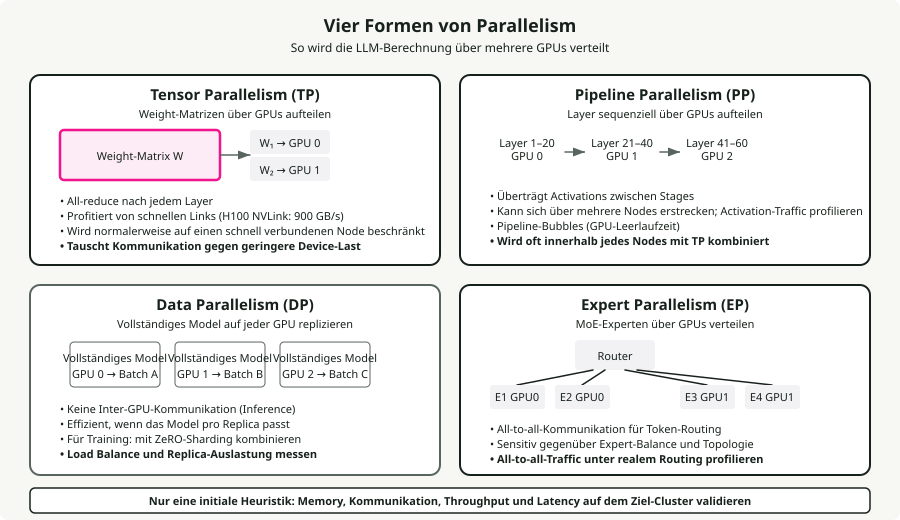
Tensor Parallelism (TP) teilt einzelne Gewichtsmatrizen über GPUs auf und benötigt nach jeder Schicht ein all-reduce. Es braucht NVLink-Bandbreite (900 GB/s auf H100) und funktioniert am besten innerhalb eines einzelnen Nodes. TP=2 oder TP=4 ist typisch; höher bringt wegen Kommunikations-Overhead abnehmende Erträge. Für Inferenz reduziert TP die Latenz pro Request durch Aufteilung des Compute.
Pipeline Parallelism (PP) teilt Schichten sequentiell über GPUs auf und übergibt Aktivierungen zwischen Stages. Der geringere Bandbreitenbedarf macht ihn auch über Nodes via InfiniBand praktikabel, führt aber zu Pipeline-Bubbles (GPU-Leerlauf). Ein häufiges Muster: Llama-405B verwendet TP=8 innerhalb von Nodes und PP=2 über Nodes.
Data Parallelism (DP) repliziert das vollständige Modell auf jeder GPU. Für Inferenz ist das die kosteneffizienteste Skalierungsstrategie: Jede Replik bearbeitet unabhängige Requests ohne Inter-GPU-Kommunikation. Für Training ist es die primäre Skalierungsachse, kombiniert mit ZeRO zum Sharden von Optimizer States.
Expert Parallelism (EP) verteilt MoE-Experten über GPUs und verwendet all-to-all-Kommunikation für Token-Routing. DeepSeek-V3 (671B gesamt, 37B aktiv, 256 Experten) wird typischerweise mit EP=8 pro Node deployed. Die all-to-all-Kommunikation macht selbst auf NVLink ~47 % der Forward-Pass-Latenz aus und ist damit der Hauptflaschenhals von MoE.
Das Entscheidungsframework für Parallelismus:
- Modell passt auf 1 GPU: nur DP verwenden.
- Modell passt auf 1 Node: TP innerhalb des Nodes + DP über Nodes.
- Modell überschreitet 1 Node: TP + PP + DP.
- Mixture of Experts: EP zu einer der obigen Varianten hinzufügen.
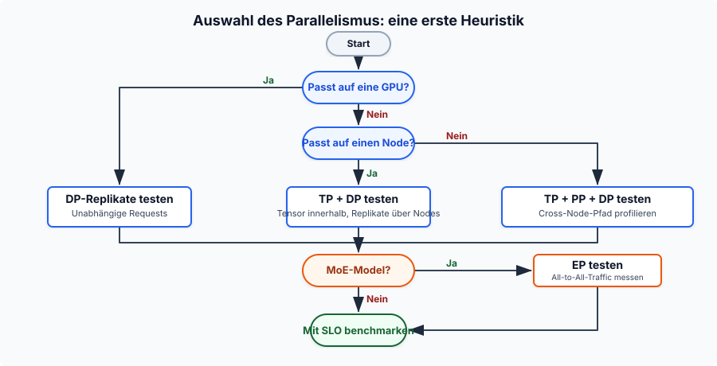
34. Serving-Frameworks im Vergleich
vLLM ist das am weitesten verbreitete Open-Source-Framework, aufgebaut auf PagedAttention und Continuous Batching. Es hat die breiteste Modellunterstützung, eine OpenAI-kompatible API und unterstützt TP/PP/DP/EP. Es ist ein Projekt der PyTorch Foundation mit der größten Community.
SGLang erreicht oder übertrifft vLLM in vielen Szenarien (bis zu 3.1x Throughput auf Llama-70B) durch RadixAttention für Prefix-Reuse, einen CPU-Scheduler ohne Overhead und native Structured Generation. Es war das erste Open-Source-Framework, das DeepSeeks offiziellen Inferenz-Throughput im großen Maßstab auf 96 H100s erreichte.
TensorRT-LLM hat die beste Latenz pro Einzelrequest (35–50 ms TTFT) durch CUDA-Graph-Fusion und Kernel-Optimierung sowie native FP8/FP4-Unterstützung. Der Trade-off ist eine steilere Lernkurve, Docker-Abhängigkeit und NVIDIA-Lock-in.
TGI (HuggingFace) integriert sich gut ins HuggingFace-Ökosystem und unterstützt mehrere Backends (NVIDIA, AMD, Intel). Stand Anfang 2025 hat HuggingFace TGI in den Maintenance-Modus versetzt.
Ollama ist für Entwickler, die lokalen LLM-Zugriff in zwei Befehlen wollen. Nicht auf Produktions-Throughput optimiert.
llama.cpp ist die portable C/C++-Option mit der breitesten Hardwareunterstützung (ARM, AVX, Metal, CUDA, ROCm, Vulkan). Das GGUF-Format unterstützt Quantisierung von 1.5 Bit bis 8 Bit. CPU-Inferenz liefert 3–45 Tokens/s; GPU (RTX 4090) erreicht ~128 Tokens/s auf Llama 8B Q4_K_M.
35. GPU-Auswahl für Inferenz
GPU-Preise und Verfügbarkeit Stand März 2026:
| GPU | Speicher | Bandbreite | Native Präzision | TF32 TFLOPS | NVLink | Cloud $/h |
|---|---|---|---|---|---|---|
| B200 | 192 GB HBM3e | 8 TB/s | FP4, FP8, INT8 | ~4,500 (FP8) | 5.0 (1.8 TB/s) | ~$6.25 |
| H200 | 141 GB HBM3e | 4.8 TB/s | FP8, INT8 | 989 | 4.0 (900 GB/s) | $2.15-6.00 |
| H100 SXM | 80 GB HBM3 | 3.35 TB/s | FP8, INT8 | 989 | 4.0 (900 GB/s) | $1.49-3.90 |
| A100 SXM | 80 GB HBM2e | 2.0 TB/s | INT8, FP16 | 312 | 3.0 (600 GB/s) | $1.10-2.54 |
| L40S | 48 GB GDDR6 | 864 GB/s | FP8, INT8 | 362 (FP16) | None | $0.80-1.50 |
| A10G | 24 GB GDDR6 | 600 GB/s | INT8, FP16 | 70 | None | $1.00-1.50 |
| RTX 4090 | 24 GB GDDR6X | 1.0 TB/s | FP8, INT8 | 83 (FP32) | None | ~$0.35/hr |
H200 ist aktuell der Sweet Spot für große Modelle. Mit 141 GB Speicher passt Llama 70B auf eine einzelne GPU (früher waren 2x H100 nötig), und 4.8 TB/s Bandbreite liefern bis zu 2x schnellere Inferenz als H100 auf Llama 2 70B. B200 ist ein Generationssprung: native FP4-Unterstützung, 192 GB HBM3e und NVLink 5.0 mit 1.8 TB/s. Die A10G wird in Cloud-Umgebungen (wie AWS G5) stark für das Serving von 7B–8B-Parameter-Modellen genutzt, wegen ihres Preis-Leistungs-Verhältnisses. Die RTX 4090 bleibt mit ~$1,600 MSRP der Consumer-König.
Native Hardwareunterstützung für Quantisierung hat großen Einfluss auf die Performance. AWQ und GPTQ (mit INT4-Gewichten) können auf jeder Architektur effizient laufen, indem in FP16-Register dequantisiert wird, aber echte native Beschleunigung über Tensor Cores hängt von der Generation ab. Hopper (H100/H200) und Ada (L40S/4090) beschleunigen FP8 nativ, und Blackwell (B200) ergänzt native FP4 Tensor Cores für große Throughput-Gewinne. Alle gelisteten GPUs unterstützen INT8-Matrixoperationen.
LLM-Decode ist speicherbandbreitenlimitiert, daher zählt für die meisten Serving-Workloads Bandbreite mehr als rohe TFLOPS. Deshalb übertrifft H200 die H100 trotz identischer Compute-Architektur.
36. Model Cascading und Routing
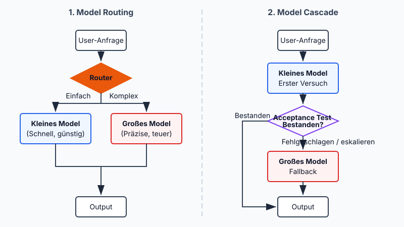
Model Routing entscheidet pro Anfrage, welches LLM sie bearbeitet, basierend auf vorhergesagter Komplexität. RouteLLM (LMSYS/UC Berkeley, ICLR 2025) verwendet Matrix-Factorization-Router, trainiert auf Chatbot-Arena-Präferenzdaten, und erzielt 85 % Kostenreduktion auf MT-Bench bei 95 % der GPT-4-Qualität. Die Ökonomie funktioniert weiterhin: Ein Frontier-Modell wie GPT-4o kostet ~\\(5.00/M Tokens (gemischt) gegenüber einem schnellen offenen Modell wie [Llama 3 8B](https://deepinfra.com/pricing/) mit ~\\\)0.05/M – eine Lücke von etwa 100x, die selbst unvollkommenes Routing lohnend macht.
Router-Architekturen reichen von leichten BERT-Klassifikatoren (~1–5 ms Overhead) bis zu LLM-basierten Judges. Cascading ist die sequentielle Variante: Eine Anfrage läuft durch eine Kette von Modellen, beginnend mit dem schnellsten und günstigsten. Wenn eine Scoring-Funktion entscheidet, dass die Generation nicht gut genug ist, wird zum nächsten, teureren Modell eskaliert. FrugalGPT zeigte, dass solches sequentielles Fallback die Inferenzkosten um bis zu 98 % senken kann, während es die Leistung des besten Einzel-LLMs erreicht, oder die Genauigkeit um bis zu 4 % bei gleichen Kosten steigert. Der Punkt ist, dass teure Frontier-Modelle nur für den harten Rand der Anfragen eingesetzt werden, die sie tatsächlich brauchen.
Teil VII — Anwendungen
Anwendungsmuster, die rohe Modellfähigkeiten in nützliche Systeme verwandeln. Embeddings treiben Retrieval an, RAG verankert Antworten in externem Wissen, Agents orchestrieren mehrstufige Workflows, und Prompt Engineering verbindet alles.
37. Embedding-Modelle vs. generative Modelle
Embedding-Modelle kodieren Text in Vektoren fester Dimension, die semantische Bedeutung erfassen. Anders als generative Decoder-Modelle, die Token-Sequenzen erzeugen, geben sie einen einzelnen dichten Vektor (768–4,096 Dimensionen) für die gesamte Eingabe aus. Die meisten Embedding-Modelle verwenden encoder-only Transformer (bidirektionale Attention) statt Decodern. Der Encoder verarbeitet alle Eingabetokens auf einmal und erzeugt für jedes Token eine kontextualisierte Repräsentation. Eine Pooling-Schicht verdichtet diese Token-Repräsentationen dann zu einem einzelnen Vektor, typischerweise Mean Pooling (Mittelwert über alle Token-Embeddings) oder CLS Pooling (Ausgabe eines speziellen Klassifikations-Tokens). Danach wird das Modell mit kontrastivem Lernen fine-tuned: semantisch ähnliche Texte werden im Vektorraum näher zusammengebracht, unähnliche weiter auseinander.
Top-Embedding-Modelle (2025-2026):
| Modell | Dimensionen | Architektur | MTEB-Score |
|---|---|---|---|
| Qwen3-Embedding-8B | bis zu 4,096 | Decoder-basiert (Qwen3) | 70.6% |
| Gemini Embedding 2 | 3,072 | Multimodal (Text/Bild/Video/Audio) | 68.2% |
| pplx-embed-v1-4B | 2,560 | Decoder-basiert (Qwen3), natives INT8/Binary | 69.7% |
| Voyage-3-large | 2,048 | Proprietär | 66.8% |
| OpenAI text-embedding-3-large | 3,072 | Proprietär | 64.6% |
Einige Trends in der Generation 2025–2026. Top-Modelle verwenden jetzt decoder-only Backbones (Qwen3, Mistral) mit bidirektionaler Attention und darüber liegenden Pooling-Schichten, was die alte encoder-only-Annahme aufbricht. Perplexitys pplx-embed führte native quantized embeddings ein: INT8 (4x Speicherreduktion) und Binary (32x Reduktion) werden direkt während der Inferenz erzeugt, ohne nachträglichen Quantisierungsverlust. Googles Gemini Embedding 2 ist das erste nativ multimodale Embedding-Modell, das Text, Bilder, Video und Audio in einen einzigen gemeinsamen Vektorraum mappt.
Matryoshka Representation Learning (MRL, Kusupati et al., NeurIPS 2022) ist die Technik, die flexible Embedding-Dimensionen ermöglicht. Benannt nach russischen Matrjoschka-Puppen strukturiert MRL ein Embedding so, dass seine ersten \(m\) Dimensionen genauso informativ sind wie ein unabhängig trainiertes \(m\)-dimensionales Modell. Während des Trainings wird statt eines einzelnen Loss auf dem vollen Embedding parallel auf logarithmisch verteilten Dimensionen (64, 128, 256, 512, 1024, 2048, 3072) gerechnet. Alle Losses werden aggregiert und gemeinsam backpropagiert, was das Modell zwingt, die wichtigste semantische Information in die führenden Dimensionen zu packen, während jede weitere Dimensionsgruppe feinere Details ergänzt. Grob zu fein, wie bei verschachtelten Puppen.
Nach dem Training kann das Embedding auf jede dieser trainierten Dimensionen gekürzt werden, indem einfach ein Präfix des Vektors genommen wird. Der praktische Effekt ist groß: OpenAIs text-embedding-3-large, auf nur 256 Dimensionen gekürzt, übertrifft das ältere text-embedding-ada-002 auf seinen vollen 1,536 Dimensionen auf MTEB. Eine 6x Reduktion der Vektorgröße bei besserer Qualität – das bedeutet 6x weniger Speicher, 6x schnellere Similarity Search und 6x geringere Kosten für Vektordatenbanken, ohne das Modell neu trainieren zu müssen.
Das Embedding-Modell ist die wichtigste Komponentenentscheidung in einer RAG pipeline. Es bestimmt die Retrieval-Qualität, und diese setzt die Obergrenze für die Generationsqualität. Ein schlechtes Embedding-Modell kann nicht durch ein besseres LLM kompensiert werden.
38. RAG-Architektur in Produktion
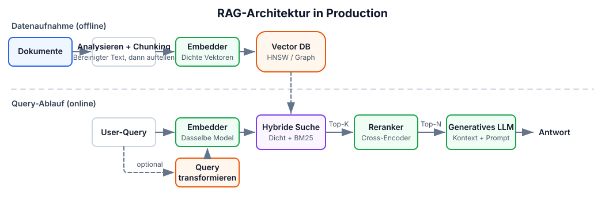
Retrieval-Augmented Generation verankert LLM-Antworten in externem Wissen, indem relevante Dokumente zur Query-Zeit abgerufen und in den Prompt-Kontext injiziert werden. Damit adressiert RAG die Kernbeschränkung rein parametrisierter Modelle: Ihr Wissen ist zum Trainingszeitpunkt eingefroren, und sie halluzinieren bei Informationen, die nicht in ihren Gewichten stecken. Ein produktives RAG-System ist eine mehrstufige Pipeline, und jede Stufe beeinflusst die finale Antwortqualität.
Die Ingestion-Pipeline läuft offline. Rohdokumente (PDFs, HTML, Markdown, Datenbanken) werden zunächst in sauberen Text geparst – schwieriger als es klingt: Allein PDF-Parsing kann Tabellen, Header und Formatierung verlieren. Der Text wird dann in Chunks aufgeteilt, die unabhängig eingebettet und indexiert werden.
Die Chunking-Strategie hat überproportionalen Einfluss auf die Retrieval-Qualität. Zu klein (unter ~100 Tokens), und Chunks verlieren Kontext; zu groß (über ~512 Tokens), und sie verwässern Relevanz mit Off-Topic-Inhalt. Häufige Ansätze sind feste Größe mit Overlap (256 Tokens mit 10–15 % Überlappung – einfach und effektiv), rekursives Character Splitting (teilt nach Absatz, dann Satz, dann Wort – respektiert natürliche Grenzen) und semantisches Chunking (gruppiert Sätze anhand von Embedding-Ähnlichkeit – höchste Qualität, aber langsamer).
Jeder Chunk wird dann mit einem Modell wie in Section 37 eingebettet und in einer Vektordatenbank gespeichert (Pinecone, Weaviate, Qdrant, pgvector usw.).
Die Retrieval-Pipeline läuft zur Query-Zeit. Naives RAG (Query einbetten, eine einzelne Vektorsuche ausführen, Ergebnisse in den Prompt stopfen) liefert in Enterprise-Settings meist nicht die gewünschte Genauigkeit. Produktionsreifes RAG fügt zusätzliche Stufen hinzu, um die Lücke zu schließen:
- Hybrid search kombiniert dichte Vektor-Retrievals (semantische Ähnlichkeit) mit sparsamer Suche wie BM25 (exakter Keyword-Match), zusammengeführt über Reciprocal Rank Fusion (RRF). Dichte Suche ist stark bei semantischen Paraphrasen („cost of living“ passt zu „expenses“), sparse Suche fängt exakte Terme ab, die Embeddings verpassen (Produkt-IDs, Fehlercodes, Akronyme). Hybrid Search bringt eine 15–30 % Genauigkeitsverbesserung gegenüber reiner Vektorsuche (Redis/Azure Benchmarks, 2024).
- Reranking schickt die Top-\(k\) der gefundenen Chunks (typischerweise 20–50) durch ein Cross-Encoder-Modell, das Query-Dokument-Relevanz präziser bewertet als die Cosine Similarity eines Bi-Encoders im Erst-Retrieval. Der Cross-Encoder sieht Query und Dokument gemeinsam und ermöglicht dadurch feinere semantische Zuordnung. Reranking bringt weitere 23.4 % Verbesserung über Hybrid Search allein hinaus (Redis/Azure Benchmarks, 2024), bei Kosten von 50–200 ms zusätzlicher Latenz. Die neu gerankten Top-\(n\)-Ergebnisse (3–10) werden dann in den LLM-Prompt injiziert. Die vollständige Multi-Stage-Search-Pipeline (BM25, Cross-Encoder-Reranking, LLM-basierte Relevanz) habe ich in Building a Modern Search Ranking Stack behandelt.
- Query transformation schreibt die Nutzeranfrage vor dem Retrieval um, um den Recall zu verbessern. HyDE (Hypothetical Document Embeddings) lässt das LLM eine hypothetische Antwort erzeugen, die dann eingebettet und für Retrieval genutzt wird. Multi-query expansion generiert mehrere Formulierungen derselben Frage. Step-back prompting stellt zuerst eine allgemeinere Frage, um breiteren Kontext hereinzuholen.
Die häufigsten Fehlermodi:
- Retrieval failure — das richtige Dokument existiert, wird aber nicht gefunden. Gegenmaßnahmen: besseres Chunking, Hybrid Search oder Metadatenfilterung.
- Context poisoning — irrelevante abgerufene Chunks führen das LLM in die Irre. Gegenmaßnahmen: Reranking und strengere Top-\(k\)-Grenzen.
- Lost-in-the-middle — das LLM ignoriert relevanten Kontext in der Mitte eines langen Prompts (Liu et al., 2024 zeigten, dass Modelle am stärksten auf Anfang und Ende des Kontextfensters achten).
GraphRAG (Microsoft, 2024) ergänzt Vektorsuche um Traversierung eines Wissensgraphen. Beim Indexieren extrahiert ein LLM Entitäten und Beziehungen aus Dokumenten und baut einen Graphen, der Multi-Hop-Verbindungen erfasst, die flache Vektorsuche nicht sieht. Zur Query-Zeit traversiert GraphRAG diesen Graphen für beziehungsintensive Fragen wie „welche Lieferanten sind mit beiden Unternehmen verbunden?“, bei denen Standard-RAG scheitert. Die Kosten sind deutlich höherer Indexierungs-Compute und mehr Speicher.
Typische End-to-End-Latenzaufteilung: Embedding 5–20 ms, Vektorsuche 10–100 ms, Reranking 50–200 ms, LLM-Generierung 200–2.000 ms (Milvus RAG Optimization Guide, AIMultiple Reranker Benchmarks, 2026). Die Retrieval-Stufen fügen nur ~100–300 ms Overhead hinzu – im Vergleich zur Generierung wenig –, aber ihr Einfluss auf die Antwortqualität ist groß: der Unterschied zwischen halluzinierter und fundierter Antwort.
39. Agent-Architekturen und Tool Calling
LLM-Agents nutzen Modelle als Reasoning-Engines, die planen, Tools aufrufen, Ergebnisse beobachten und iterieren. Die Architekturwahl (wie der Agent denkt und wann er handelt) bestimmt Kosten, Latenz und Zuverlässigkeit. Drei Reasoning-Muster decken die meisten produktiven Systeme ab:
- ReAct — Thought → Action → Observation-Schleifen. Passt sich in Echtzeit an, weil jede Beobachtung das Reasoning aktualisiert, aber die Historie wächst und muss bei jedem Schritt erneut verarbeitet werden, was es zum teuersten Muster macht.
- ReWOO — Plant alle Tool-Aufrufe im Voraus in einem einzelnen LLM-Pass mit Platzhaltern (
#E1,#E2), führt sie aus (potenziell parallel) und synthetisiert danach. Bis zu 5x Token-Ersparnis gegenüber ReAct, aber „blind“ während der Ausführung: Es kann sich nicht erholen, wenn ein frühes Tool fehlschlägt. - Plan-and-Execute — Ein Planner erzeugt einen mehrstufigen Plan; ein Executor führt jeden Schritt aus und kann bei Fehlschlägen neu planen. Ermöglicht Modellspezialisierung (starkes Modell plant, günstiges Modell führt aus). Beste Erfolgsraten bei komplexen Aufgaben.
| Muster | Token-Kosten | Anpassungsfähigkeit | Am besten für |
|---|---|---|---|
| ReAct | Hoch | Exzellent — passt in Echtzeit um | Explorative Aufgaben, Debugging, Chat |
| ReWOO | Niedrig (~5x Ersparnis) | Schwach — blind während Ausführung | Vorhersagbare Pipelines, Dashboards |
| Plan-and-Execute | Mittel | Gut — plant bei Fehlern neu | Komplexe Analysen, Research-Tasks |
Function calling ist der Mechanismus, mit dem Agents Tools aufrufen. Natives Function Calling (unterstützt von GPT-4o, Claude, Gemini, Llama 3.1+) gibt strukturierte JSON-Tool-Invocations aus, validiert gegen ein bereitgestelltes Schema, mit deutlich geringeren Fehlerraten als textbasiertes Parsing. Das Modell sieht Tool-Definitionen als Teil seines Kontexts und lernt, wohlgeformte Aufrufe zu emittieren. Parallel function calling (mehrere Tools in einer Antwort) reduziert Round Trips für unabhängige Operationen.
Structured output und constrained decoding garantieren Schemakonformität, indem sie die Tokengenerierung selbst verändern. Engines wie xgrammar (verwendet in vLLM und SGLang) wenden bei jedem Decoding-Schritt Grammar Masks an und erzeugen 100 % gültiges JSON bei nahezu null Overhead. Schema-Guided Reasoning (SGR) geht weiter: Weil LLMs Felder sequentiell generieren, erzwingt die Platzierung von Analysefeldern vor Entscheidungsfeldern im Schema, dass das Modell vor der Entscheidung zuerst denkt. Drei SGR-Muster decken die meisten produktiven Anwendungsfälle ab: Cascade (sequentielle Schritte), Routing (Union-Typen als semantische Schalter) und Cycle (begrenzte Listen).
Produktionsprobleme: Tool-Auswahl degradiert ab ~15–20 verfügbaren Tools, mehrstufige Agents brauchen 5–30+ Sekunden, und komplexe Workflows kosten 10–50x mehr Tokens als Single-Prompt-Lösungen. Der Trend 2024–2025 sind hybride Ansätze: ReAct-Reasoning mit nativem Function Calling, orchestriert durch Frameworks wie LangGraph.
40. Prompt Engineering für Produktion
Prompt Engineering in Produktion hat weniger mit cleveren Tricks als mit systematischer Zuverlässigkeit zu tun. Die Techniken unten sind nach Wirkung geordnet. Die ersten beiden lösen allein die meisten Produktionsprobleme.
Few-shot examples sind die zuverlässigste Methode, das Ausgabeformat zu steuern. 3–5 vielfältige Beispiele, die Edge Cases abdecken (leere Inputs, mehrdeutige Anfragen, mehrteilige Antworten), verbessern Formatkonformität drastisch und reduzieren Nachbearbeitung. Vielfalt ist entscheidend: Beispiele sollten die Verteilung realer Inputs abdecken, nicht nur den Happy Path. Jenseits von 5 Beispielen setzen abnehmende Erträge ein, und jedes Beispiel verbraucht Kontexttokens – Qualität schlägt Quantität.
Chain-of-thought (CoT) prompting fordert das Modell auf, Schritt für Schritt zu denken, bevor es antwortet. Schon das einfache Suffix „Let's think step by step“ erhöht die Genauigkeit bei Mathematik, Logik und mehrstufigem Reasoning deutlich (Kojima et al., 2022). Für Produktion ist few-shot CoT (Beispiele inklusive Reasoning-Schritte, nicht nur finale Antwort) zuverlässiger als zero-shot. Self-consistency (Wang et al., 2023) erzeugt mehrere CoT-Pfade (temperature 0.5–0.7) und nimmt das Mehrheitsvotum, was Zufallsfehler reduziert, aber zusätzliche Inferenzaufrufe kostet.
Structured output mit expliziten JSON-Schemata (Section 39) entfernt eine ganze Klasse von Parsing-Fehlern. In Kombination mit constrained decoding engines wie xgrammar erhalten Sie 100 % gültige Ausgaben bei praktisch null Overhead. Kein Regex-Parsing, keine Retry-Loops.
Prompt chaining zerlegt komplexe Aufgaben in eine Pipeline fokussierter Schritte: Intent klassifizieren → Kontext holen → Antwort generieren → Ausgabe validieren. Jeder Schritt ist ein einfacher, testbarer Prompt mit genau einem Ziel. Das schlägt konsistent „Mega-Prompts“, die alles in einem Call lösen sollen, weil jeder Schritt ein anderes Modell verwenden kann (günstiger Klassifikator, teurer Generator), Fehler lokalisiert und debugbar sind und Zwischenergebnisse gecacht und wiederverwendet werden können. Der Trade-off ist zusätzliche Latenz durch sequenzielle LLM-Calls, daher lohnt sich Chaining für qualitätskritische Flows.
Temperature steuert Zufälligkeit beim Token-Sampling. Nutzen Sie 0.0–0.2 für deterministische Aufgaben (Klassifikation, Extraktion, Codegenerierung), bei denen Konsistenz zählt. Nutzen Sie 0.7–1.0 für kreative Aufgaben (Schreiben, Brainstorming), bei denen Vielfalt gewünscht ist. Vermeiden Sie Temperaturen über 1.0 in Produktion; die Ausgaben werden inkohärent. Temperature interagiert auch auf nicht offensichtliche Weise mit top_p und top_k; in den meisten Produktionssystemen reicht es, temperature zu setzen und top_p auf 1.0 zu belassen.
Trennung von System- und User-Message ist wichtiger, als viele Teams denken. System-Messages setzen dauerhaftes Verhalten („You are a medical coding assistant. Always cite ICD-10 codes.“), User-Messages tragen den anfragespezifischen Inhalt. Modelle attendieren auf System-Messages anders: Sie setzen den Verhaltensrahmen, statt Gesprächsinhalt beizutragen. Harte Constraints („NEVER include patient names in output“) gehören in die System-Message, weil Modelle spezifische Muster zuverlässiger vermeiden als allgemeine positive Instruktionen befolgen.
Der große Wandel in 2024–2025 war der Übergang von „prompt engineering“ zu context engineering: Der Fokus verschob sich vom Formulieren cleverer Instruktionen hin zum dynamischen Zusammenstellen der richtigen Information (retrieved documents, tool results, conversation history, few-shot examples) im richtigen Format an der richtigen Position im Kontextfenster. Modelle achten am stärksten auf beginning and end ihres Kontexts; kritische Instruktionen und die relevantesten abgerufenen Inhalte dort zu platzieren, liefert messbare Qualitätsverbesserungen. Diesen Wandel habe ich in Context Engineering for AI Agents behandelt.
Teil VIII — Produktionsbetrieb
Die operativen Aspekte, die entscheiden, ob Ihr System den Kontakt mit echtem Traffic überlebt: Rate Limiting, Fehlermodi, Monitoring, Kostenoptimierung und Kapazitätsplanung.
41. Rate Limiting für Requests mit variablen Kosten
Klassisches Rate Limiting in Requests pro Sekunde setzt ungefähr gleiche Kosten pro Request voraus. LLMs brechen diese Annahme. Ein 10-Token-Klassifikationsprompt und eine 100K-Token-Dokumentanalyse treffen denselben API-Endpunkt, unterscheiden sich aber um vier Größenordnungen in den Kosten. Rate Limiting nach RPS lässt entweder teure Requests unkontrolliert durch oder hungert günstige unnötig aus.
Produktionssysteme brauchen tokenbasiertes Rate Limiting über mehrere Dimensionen. OpenAI erzwingt RPM (requests per minute) und TPM (tokens per minute) mit gestuften Limits: GPT-5 Tier 1 startet bei 500K TPM und skaliert bis 4M TPM in Tier 4. Anthropic ist feingranularer, mit getrennten ITPM- (input tokens per minute) und OTPM-Limits (output tokens per minute), was widerspiegelt, dass Output-Tokens 3–5x teurer zu generieren sind als Input-Tokens zu verarbeiten. Beide nutzen den Token-Bucket-Algorithmus und füllen Kapazität kontinuierlich nach, statt sie in festen Intervallen zurückzusetzen.
Das praktische Implementierungsmuster ist eine mehrdimensionale Limit-Hierarchie (Nutzer → Anwendung → Organisation → global), mit Prioritätsstufen für Premium-Zugriff. Auf Request-Ebene zählt vor allem Token-Budget-Reservierung: Schätzen Sie beim Admission Time die Gesamtzahl Tokens (Input + max_tokens), ziehen Sie diese vom Bucket ab und justieren Sie bei Abschluss des Requests anhand der tatsächlichen Nutzung nach. Das verhindert, dass ein Burst langer Generierungsrequests die Kapazität verbraucht, bevor sie überhaupt anfangen, Ausgaben zu erzeugen.
Für selbstgehostete Deployments ist das Äquivalent provisioned throughput: reservierte dedizierte GPU-Kapazität für garantierte Token-Raten. Anthropic und Amazon Bedrock bieten das als Produkt an; bei vLLM-Deployments bedeutet es Admission Control basierend auf aktiven Decode-Slots und KV-Cache-Druck statt auf einfachen Request-Zahlen. Der Punkt führt zurück zu Section 5: Throughput wird in Tokens gemessen, nicht in Requests, also muss es Rate Limiting ebenfalls sein.
42. Fehlermodi, gegen die Sie designen müssen
LLM-Serving scheitert auf Arten, die klassische Webservices nicht kennen. Diese Fehlermodi zu verstehen (und Abwehrmechanismen zu bauen, bevor sie Produktion treffen) trennt zuverlässige Systeme von beeindruckenden Demos.
Out-of-Memory (OOM) ist der häufigste Fehler. Ein 70B-FP16-Modell braucht allein für Gewichte ~140 GB, und KV-Cache für eine einzelne 128K-Kontextsequenz addiert ~40 GB (Section 6). Die Lücke zwischen „passt in den Speicher“ und „OOM unter Last“ ist kleiner als sie aussieht: Ein Batch von 8 Long-Context-Requests kann mehr Speicher für KV-Cache als für Modellgewichte benötigen. Prävention beginnt mit vLLMs Parameter gpu_memory_utilization (Default 0.9; konservative Deployments nutzen 0.85–0.90), kombiniert mit Quantisierung und PagedAttention. Für Workloads mit hohem KV-Cache-Druck verlagert LMCache den KV-Cache auf CPU-Speicher oder Disk und erzielt 3–10x Latenzreduktion, indem effektive Cache-Kapazität über GPU-Speichergrenzen hinaus erweitert wird.
Preemption tritt auf, wenn der KV-Cache-Speicher voll läuft und der Scheduler aktive Requests verdrängen muss, um Platz für neue zu schaffen. In vLLM werden verdrängte Requests von Grund auf neu berechnet statt auf CPU ausgelagert (Neuberechnung ist für die meisten praktischen Sequenzlängen schneller). Für den Nutzer bedeutet das: Sein laufender Request startet still neu. TTFT sieht normal aus, aber End-to-End-Latenz verdoppelt oder verdreifacht sich. Beobachten Sie Preemption-Zahlen genau. Steigende Preemption-Raten bedeuten: mehr Speicher, kürzere Sequenzen oder mehr Replikas.
Tail latency steigt sprunghaft, wenn große Prefills die GPU monopolisieren. Ein einzelnes 100K-Token-Prefill kann Decode-Schritte für jeden anderen Request im Batch blockieren. Chunked prefill (Section 7) ist die wichtigste Abwehr, mit einer 54 % P99 TBT-Reduktion. Auch die Scheduling-Strategie zählt: Der Learning-to-Rank scheduler (NeurIPS 2024) sagt relative Output-Längen voraus und approximiert shortest-job-first, was eine 6.9x Reduktion der mittleren Latenz gegenüber FCFS bei weniger als 2 % Overhead liefert. Längenbewusste Scheduler wie CascadeInfer gehen weiter, indem sie Instanzen in längenspezialisierte Gruppen partitionieren und Tail-TTFT um 56–62 % reduzieren.
Cascading failures folgen einem vorhersagbaren Muster. Ein langsamer Request (großes Prefill oder lange Generierung) belegt einen Decode-Slot, die Queue-Tiefe wächst, Upstream-Clients laufen in Timeouts, Retries verstärken die Last um 2–3x, und das gesamte System degradiert. Die Präventionshierarchie: Admission Control (Requests ablehnen, wenn Queue-Tiefe den Schwellenwert übersteigt) → Concurrency Limits pro Request und max_tokens-Caps → Circuit Breaker am Gateway → disaggregierte Prefill-/Decode-Pools (Section 7), damit prefilllastige Requests Decoder nicht aushungern.
43. Monitoring von LLM-Systemen
LLM-Monitoring unterscheidet sich in einigen grundlegenden Punkten vom Monitoring klassischer APIs. Jeder Request hat variable Kosten, zwei separate Phasen mit unterschiedlichen Flaschenhälsen und einen Speicher-Footprint, der sowohl von Eingabelänge als auch Generierungslänge abhängt. Standardmetriken wie Request-Latenz und Fehlerquote erfassen den größten Teil dessen, was zählt, nicht.
Die Metrik, die die meisten Teams nicht verfolgen, ist goodput: die Anzahl Requests pro Sekunde, die alle SLO-Schwellen (TTFT, TPOT, Gesamtlatenz) einhalten. Das Konzept stammt aus Google Cloud's ML productivity measurement und ist zur besten Einzelmetrik für Systemgesundheit geworden. Roher Throughput kann gut aussehen, während Goodput kollabiert: Ein System mit 100 Requests/s, das aber bei 40 % davon die TTFT-SLO reißt, hat einen Goodput von 60 – und 40 % Ihrer Nutzer haben eine schlechte Erfahrung. Goodput zu optimieren zwingt dazu, sich um die Verteilung der Performance zu kümmern, nicht nur um den Mittelwert.
vLLM stellt unter /metrics einen Prometheus-Endpunkt bereit, mit Metriken über den gesamten Serving-Lifecycle: vllm:num_requests_running und vllm:num_requests_waiting (Queue-Druck), vllm:kv_cache_usage_perc (Anteil genutzter KV-Cache-Blöcke — über 90 % sagt bevorstehende Preemption voraus), Histogramme der Generierungslänge und Prefix-Cache-Hit-Raten. Das praktische Setup ist einfach: Prometheus scraped /metrics (alle 1–5 Sekunden), Grafana visualisiert Dashboards, und OpenTelemetry mit Jaeger übernimmt Distributed Tracing über mehrteilige LLM-Pipelines.
Die Alerts, die zählen, und warum jeder Schwellenwert zählt:
- Preemption count spikes — Requests werden verdrängt und neu gestartet; Nutzer erleben still eine Verdoppelung der Latenz.
- KV cache utilization >90% — noch ein Batch mit Long-Context-Requests, und Sie laufen in Preemption-Kaskaden.
- Queue depth > 2–3x Ihrer Batch-Größe — Admission Control sollte Requests abweisen oder depriorisieren.
- TTFT steigt, während TPOT flach bleibt — dieses Divergenzmuster bedeutet: Das Problem liegt in Queueing oder Netzwerk, nicht in GPU-Compute. Prefill und Decode haben unabhängige Flaschenhälse (Section 4), daher sagt Ihnen die Bewegung nur einer Metrik sofort, welches Subsystem Sie prüfen müssen. Diese eine Diagnose spart Stunden Debugging.
44. Kostenoptimierung: Eine kumulative Strategie
Aktuelle API-Preise (Stand März 2026) spannen drei Größenordnungen auf: GPT-4o bei \(2.50/\)10.00 pro Million Input-/Output-Tokens gegenüber Gemini Flash-Lite bei \(0.075/\)0.30. Die Entwicklung ist auffällig. GPT-4-äquivalente Leistung kostet heute $0.40/M Tokens gegenüber $20 Ende 2022, mit Kostenrückgang von ungefähr 10x pro Jahr. Selbst auf dieser deflationären Kurve beträgt der Unterschied zwischen naivem und optimiertem Deployment an jedem Preisniveau 10–20x.
Achten Sie auf die Asymmetrie in der Preisgestaltung aller Anbieter: Output-Tokens kosten 3–10x mehr als Input-Tokens. GPT-4o berechnet $10/M Output gegenüber $2.50/M Input (4x). Claude Sonnet 4 berechnet $15/M Output gegenüber $3/M Input (5x). Der Grund: Output-Tokens benötigen sequentielle Decode-Schritte (Section 7), während Input-Tokens parallel verarbeitet werden. Deshalb hat die Optimierung der Output-Länge (strukturierte Outputs, constrained generation, prägnante Systemprompts) mehr Hebel als die Optimierung der Input-Länge.
Die erfolgreiche Strategie stapelt mehrere Ansätze, deren Effekte sich multiplikativ verstärken:
- Quantisierung (FP16 → INT4) reduziert Serving-Speicher um 75 %, ermöglicht größere Batches und bringt 60–70 % operative Kostenreduktion (Section 9).
- Model routing schickt 70 % des Traffics an günstigere Modelle. Ein realer Fall: Monatsrechnung von $42K auf $29K (Maxim AI Case Study, 2024), indem Request-Komplexität mit Modellfähigkeit gematcht wurde (Section 36).
- Prompt caching spart bis zu 90 % bei Workloads mit gemeinsamen Präfixen. Anthropic berechnet für Cache-Reads 0.1x des Basispreises, und gecachte Tokens zählen nicht einmal gegen ITPM-Limits (Section 16).
- Batch APIs bieten 50 % Rabatt für nicht-echtzeitkritische Arbeit (Evaluierungen, synthetische Datengenerierung, Bulk-Klassifikation).
- Self-hosting erreicht Break-even ungefähr bei >2M Tokens/Tag, aber die Analyse ist tückisch. Ein GPU-Budget von $5K/Monat wird leicht zu $25K, wenn Engineering-Zeit, Infrastruktur-Overhead, On-Call-Last und suboptimale Auslastung gegenüber Anbietern eingerechnet werden, die über Tausende Kunden amortisieren.
Konservativ gestapelt: Quantisierung (0.3x) × Routing (0.7x) × Caching (0.5x) × Batching (0.5x) = ~0.05x, also 95 % Reduktion gegenüber der naiven Baseline. Nicht jeder Workload qualifiziert sich für jede Optimierung, aber selbst teilweises Stapeln bringt 5–10x Einsparungen.
Die versteckten Kosten, die die Self-Hosting-Rechnung untergraben: ML Engineering macht 70–80 % der gesamten Deployment-Kosten aus, nicht Compute (TrueFoundry / MLOps Reports, 2024). Die GPU-Rechnung ist nur die sichtbare Spitze des Eisbergs.
45. Kapazitätsplanung und Autoscaling
Kapazitätsplanung für LLM-Serving unterscheidet sich in drei Punkten von klassischen Webservices. Request-Kosten variieren um Größenordnungen (ein 100-Token-Request und ein 100K-Token-Request treffen denselben Endpunkt). Decode ist ein lang laufender sequentieller Prozess, kein schneller Request-Response-Zyklus. Und die bindende Beschränkung ist Speicher, nicht Compute. Wenn Sie das falsch einschätzen, zahlen Sie entweder für idle GPUs oder verlieren unter Last Requests.
Die harte Obergrenze für gleichzeitige Requests ist das KV-Cache-Speicherbudget, nicht FLOPS:
Für ein Llama-3-70B-Modell in INT4 (~35 GB) auf einer 80-GB-H100 bleiben ungefähr 40 GB für den KV-Cache. Mit GQA und durchschnittlich 4K Kontext benötigt jede Sequenz ~160 MB KV-Cache, was zu ~250 gleichzeitigen Sequenzen führt. Bei 128K Kontext sinkt das auf ~5 Sequenzen pro GPU. Deshalb treiben GPU selection und KV cache optimization Ihren Kapazitätsplan direkt.
Die Kapazitätsformel für Fleet Sizing:
Wichtig ist hier „at target SLO“. Eine einzelne H100 kann 2.000+ Tokens/s liefern, wenn Latenz egal ist, aber nur 400–800 Tokens/s bei gleichzeitiger Einhaltung von P99 TTFT unter 500 ms. Benchmarken Sie immer gegen Ihre realen SLO-Ziele, nicht gegen theoretische Maxima.
Autoscaling-Signale brauchen ein Umdenken. GPU-Auslastung ist als Skalierungssignal fast nutzlos, weil sie selbst bei überlastetem System hoch bleibt: Die GPU ist immer beschäftigt, egal ob sie Requests gesund verarbeitet oder auf Preemptions thrashiert. Bessere Signale sind queue depth (misst direkt, dass Nachfrage Kapazität übersteigt), KV cache utilization (sagt Preemption voraus, bevor sie passiert — bei 80 % hochskalieren, nicht bei 95 %) und goodput degradation (SLO-Verletzungen sind der Ground Truth dafür, dass Kapazität fehlt). Das sind die Metriken aus Section 43.
Für Entwicklungs- und Staging-Umgebungen ist Scale-to-Zero ökonomisch sinnvoll. GPU-Instanzen kosten $2–4/Stunde; eine Staging-Umgebung, die 24/7 läuft, kostet $1,500–3,000/Monat für eine einzelne GPU. Serverless-Inferenzplattformen und Kubernetes-basierte Autoscaler (wie KEDA mit benutzerdefinierten Metriken) können Instanzen in Idle-Phasen auf null herunterfahren und in 30–60 Sekunden cold-starten – für Nicht-Produktivbetrieb völlig ausreichend. Der Trade-off ist Modellladezeit (30–60 Sekunden für ein 70B-Modell), wodurch Scale-to-Zero für Produktionslatenzziele ungeeignet ist, aber Nicht-Produktivkosten für GPUs um 80–90 % senkt.
Das vernetzte System
Diese 45 Konzepte sind keine lose Sammlung. Sie bilden ein vernetztes System. Die Größe des KV-Caches bestimmt die Batch-Größe, die Batch-Größe bestimmt die Arithmetic Intensity, die Arithmetic Intensity steuert, ob Decode memory-bound ist, das treibt TPOT, und TPOT definiert Throughput. GQA verkleinert den KV-Cache, was größere Batches ermöglicht, die Arithmetic Intensity erhöht und die GPU-Auslastung verbessert. FlashAttention nutzt die SRAM-HBM-Bandbreitenlücke aus. Continuous Batching löst Compute-Auslastung, erzeugt aber Speicherfragmentierung, die PagedAttention beseitigt. Chunked prefill plant compute-bound und memory-bound Arbeit gemeinsam; das Roofline-Modell erklärt, warum diese Komplementarität funktioniert.
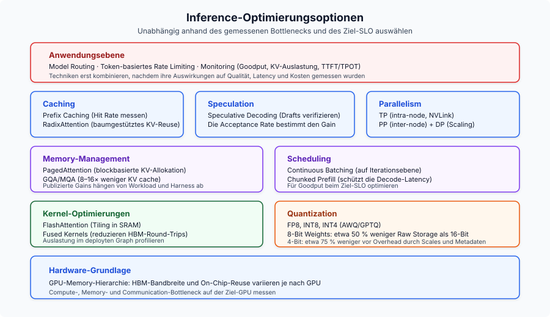
Auf der Trainingsseite verschob die Chinchilla-Falle das Feld von „groß trainieren“ zu „klein und lang trainieren“ (Llama 3 8B mit 1,875 Tokens pro Parameter). GRPO entfernte PPOs Last aus vier Modellkopien im Speicher – genau das machte DeepSeek-R1s Reasoning praktisch machbar. Distillation aus R1s Chain-of-Thought erwies sich als wirksamer, als RL direkt auf kleinere Modelle anzuwenden, und das veränderte den Bau kompakter Reasoning-Systeme grundlegend.
Das Meta-Muster: Inferenzkosten fallen um etwa 10x pro Jahr, während Fähigkeiten steigen. Teams, die Inferenzoptimierung als echte Engineering-Disziplin behandeln (Routing, Caching, Quantisierung, passend dimensionierte Hardware), bauen kumulative Vorteile in einem Markt auf, in dem die Kostenuntergrenze ständig sinkt.
Kernprinzipien
- LLM-Inferenz hat zwei verschiedene Phasen. Prefill ist compute-bound, Decode ist memory-bandwidth-bound. Jede Optimierung zielt auf eine oder beide.
- Der KV-Cache ist der zentrale Flaschenhals. Seine Größe bestimmt Batch-Kapazität, Speicherdruck und letztlich Throughput. GQA, PagedAttention und Quantisierung greifen ihn direkt an.
- Die GPU-Speicherhierarchie treibt alles. Die 10x-Bandbreitenlücke zwischen SRAM und HBM erklärt FlashAttention, Kernel Fusion und warum Decode memory-bound ist.
- Continuous batching + PagedAttention liefern zusammen 23x Throughput gegenüber naivem Serving. Für Produktion nicht verhandelbar.
- Chinchilla-optimal ist nicht inferenz-optimal. Das Feld hat sich zu massivem Übertraining kleinerer Modelle bewegt (1,875 Tokens/Parameter für Llama 3 8B).
- GRPO und Distillation haben Alignment neu geformt. DeepSeek-R1 zeigte, dass GRPO + verifizierbare Rewards + Distillation besser ist, als RL direkt auf kleinere Modelle anzuwenden.
- Kostenoptimierung kumuliert. Quantisierung, Routing, Caching und Batch APIs zu stapeln bringt 5–10x Kostenreduktion gegenüber naivem Deployment.
- Bandbreite zählt im Serving mehr als TFLOPS. H200 übertrifft H100 bei identischem Compute allein durch Speicherbandbreite.
Weiterführende Lektüre
Verwandte Deep Dives aus diesem Blog, nach Themen organisiert:
- LLM Fine-Tuning Guide — wann Fine-Tuning vs. RAG vs. Prompt Engineering
- Open-Source LLM Variants and File Formats — Modellvarianten und quantisierte Formate passend zur Hardware wählen
- LoRAX Serving Guide — Tausende LoRA-Adapter in Produktion ausliefern
- Scaling Large Language Models — Multi-GPU- und Multi-Node-Strategien
- Local LLMs on macOS — praktisches Setup mit llama.cpp und Ollama
- AI Agent Reasoning Loops in 2026 — Deep Dive zu ReAct, ReWOO und Plan-and-Execute
- AI Agent Memory Architecture in 2026 — Checkpoints, Vector Stores und Dokumentenspeicher für zustandsbehaftete Agents
Referenzen
Nach Themenbereichen organisiert; Abschnittsnummern in Klammern.
Inferenz und Attention
- FlashAttention: Fast and Memory-Efficient Exact Attention with IO-Awareness - Dao et al., NeurIPS 2022
- FlashAttention-2: Faster Attention with Better Parallelism and Work Partitioning - Dao, 2023
- FlashAttention-3: Fast and Accurate Attention with Asynchrony and Low-precision - Shah et al., NeurIPS 2024
- Flash-Decoding for long-context inference - Dao et al., 2023
- Efficient Memory Management for Large Language Model Serving with PagedAttention - Kwon et al., SOSP 2023
- Orca: A Distributed Serving System for Transformer-Based Generative Models - Yu et al., OSDI 2022
- GQA: Training Generalized Multi-Query Attention - Ainslie et al., 2023
- Triton: an intermediate language and compiler for neural network computations - Tillet et al., MAPL 2019
- FlashNorm: Fast Normalization for LLMs - 2024
- Deep Kernel Fusion for Transformers - DeepFusionKernel, 2026
Spekulatives Decoding
- EAGLE-3: Scaling up Inference Acceleration of Large Language Models - Li et al., NeurIPS 2025
- Medusa: Simple LLM Inference Acceleration Framework with Multiple Decoding Heads - ICML 2024
Quantisierung
- AWQ: Activation-aware Weight Quantization for LLM Compression and Acceleration - MLSys 2024 Best Paper
- GPTQ: Accurate Post-Training Quantization for Generative Pre-trained Transformers - Frantar et al., ICLR 2023
- Marlin: Mixed-Precision (FP16xINT4) LLM Inference Kernel - Frantar et al., 2024
Training und Fine-Tuning
- LoRA: Low-Rank Adaptation of Large Language Models - Hu et al., ICLR 2022
- QLoRA: Efficient Finetuning of Quantized LLMs - Dettmers et al., NeurIPS 2023
- ZeRO: Memory Optimizations Toward Training Trillion Parameter Models - Rajbhandari et al., SC20
- ZeRO-Infinity: Breaking the GPU Memory Wall for Extreme Scale Deep Learning - Rajbhandari et al., 2021
- Self-Instruct: Aligning Language Models with Self-Generated Instructions - Wang et al., ACL 2023
- WizardLM: Empowering Large Language Models to Follow Complex Instructions - Xu et al., ICLR 2024
- Phi-4 Technical Report - Microsoft, 2024
- AI models collapse when trained on recursively generated data - Shumailov et al., Nature 2024
Alignment
- Direct Preference Optimization: Your Language Model is Secretly a Reward Model - Rafailov et al., NeurIPS 2023
- DeepSeekMath: Pushing the Limits of Mathematical Reasoning in Open Language Models - Introduced GRPO
- DeepSeek-R1: Incentivizing Reasoning Capability in LLMs via Reinforcement Learning - DeepSeek, 2025
Skalierung und Architektur
- The Llama 3 Herd of Models - Meta, 2024
- LLaMA: Open and Efficient Foundation Language Models - Touvron et al. (Meta), 2023
- Llama 2: Open Foundation and Fine-Tuned Chat Models - Touvron et al. (Meta), 2023
- Qwen3 Technical Report - Qwen Team (Alibaba), 2025
- Training Compute-Optimal Large Language Models - Hoffmann et al. (Chinchilla), NeurIPS 2022
- RoFormer: Enhanced Transformer with Rotary Position Embedding - Su et al., 2021
- YaRN: Efficient Context Window Extension of Large Language Models - Peng et al., ICLR 2024
- SGLang: Efficient Execution of Structured Language Model Programs - Zheng et al., NeurIPS 2024
- Mixtral of Experts - Jiang et al. (Mistral AI), 2024
Embeddings
- Matryoshka Representation Learning - Kusupati et al., NeurIPS 2022
- pplx-embed-v1: Diffusion-Pretrained Dense and Contextual Embeddings - Perplexity AI, 2026
Agent-Architekturen
- ReAct: Synergizing Reasoning and Acting in Language Models - Yao et al., ICLR 2023
- ReWOO: Decoupling Reasoning from Observations for Efficient Augmented Language Models - Xu et al., 2023
- Plan-and-Solve Prompting: Improving Zero-Shot Chain-of-Thought Reasoning by Large Language Models - Wang et al., ACL 2023
Routing
- RouteLLM: Learning to Route LLMs with Preference Data - Ong et al., ICLR 2025
Benchmarks
- MLPerf Inference v5.0 Results - MLCommons, April 2025
Serving-Architekturen
- SARATHI: Efficient LLM Inference by Piggybacking Decodes with Chunked Prefills - Agrawal et al., 2023 (Chunked Prefill)
- Splitwise: Efficient Generative LLM Inference Using Phase Splitting - Patel et al., ISCA 2024 (Disaggregated Serving)
- DistServe: Disaggregating Prefill and Decoding for Goodput-optimized Large Language Model Serving - Zhong et al., OSDI 2024 (Disaggregated Serving)
Serving-Frameworks
- vLLM - PagedAttention-basiertes Serving-Framework
- SGLang - RadixAttention und Structured Generation
- TensorRT-LLM - NVIDIA-optimierte Inferenz
- llama.cpp - Portable C/C++-Inferenz
- DeepSpeed - Microsoft-Bibliothek für verteiltes Training
- Ollama - Lokaler LLM-Runner
Betrieb
- Efficient LLM Scheduling by Learning to Rank - Fu et al., NeurIPS 2024 (vLLM-LTR)
- CascadeInfer: Low-Latency and Load-Balanced LLM Serving via Length-Aware Scheduling - 2024
- Goodput metric as measure of ML productivity - Google Cloud, 2024
- vLLM Optimization and Tuning - vLLM-Dokumentation
- vLLM Metrics - vLLM-Dokumentation
- LMCache: KV Cache Management for LLM Serving - KV-Cache-Offloading
- OpenAI Rate Limits - OpenAI API-Dokumentation
- Anthropic Rate Limits - Anthropic API-Dokumentation